Otherwise you can write me a mail: dittrich.c.jan AT gmail DOTcom
Introduction
Why should I use the methods described in this book?
User Need Research helps us to find out how and why users do what they do. Why is this important? Using this knowledge we can create products or services that matter for the users and match their needs in daily life. Even if your idea and the final outcome is actually awesome, it still needs to find its place in the user's life. It can be helpful to consider existing motivations, activities and problems the users have and to know the context the interaction happens in. Will they be motivated or tired? What other products do they use in the situations in which your idea may matter? How may other people influence the interaction?
It can naturally happen that you find out that your assumptions about the users are not totally right. This may feel bad at first. But even if the user's actions don't make sense to you immediately , they do make sense for the users. If you find out, you can adjust your assumptions and build upon your newly gained knowledge. You may also get new ideas by researching your users needs: An unexpected concept a user holds, a clever hack they used to solve a problem may spark new ideas – Ideas which will be based on user needs.
Is this like usability testing?
The methods described in this book are different from common usability testing. Testing is great for finding out about users’ problems, existing bugs and the possibilities to tweak an existing product. However, usability tests tell you little about the »why« and »how« of users’ work.
Often, usability testing is done with a nearly finished product, at a location users come to (like a testing lab) and with set tasks for them to do. The methods I will demonstrate here can be applied if you have a product but also if you only have rough ideas about an area you are interested in designing for. Also, we will strive for getting the information in the context where the interaction usually happens (not in a lab) and observe tasks that the user would just do in contrast to set ones. This allows us to explore the actual actions and the reasons behind them – because even if you might be puzzled about some things you observe they usually make perfect sense for the users.
Couldn't I just as what they want?
Since we talk about finding user needs, an obvious question is if we could not just ask them what they want and just build it. But this may not be a good idea.
Usually, people want a better version of what they already have. Henry Ford allegedly said »If I had asked people what they wanted, they would have said faster horses«. Instead of faster horses, Ford sold a product that satisfied an underlying motivation – getting quickly from A to B – instead of the specific wish.
Getting to know about the underlying motivation (why do they want to get from A to B?), the activities (How do they currently get from A to B) and their problems (What is currently unpleasant about getting from A to B) is what helps us to understand users better.
This does not mean that what people wish can or should be ignored or that some ingenious designer is needed to show them their true needs. I just want to say that asking for needs directly and than just building it is not as simple and helpful as it seems intuitively.
In which situations/project state can I use these methods?
Methods for finding user needs are usually applied in early project stages. The focus is not on evaluating what has been build so much, but more on how to improve future designs. So the research takes place before you decide which features go in the product and how they exactly work. Here are some scenarios in which finding out about the how and why about the user's work makes sense:
There is a broad topic given which you want to explore further.
This might be »using libraries« or even »Finding and working with information in media«.
You have an idea for a product or a service and you want to find out, what user motivations, activities and problems are important to consider when building this product or service.
The library wants to create an app for creating bibliographies, and they want to find out what they need to consider when doing this
An existent product is to be improved or changed.
The library has an app for creating bibliographies since several years. However, there are complaints about it being useless and hard to use; Now they want to find out how version 2.0 should be different
Starting with a broad topic, not focused on a solution, may be the ideal (since you can solely focus on the user needs), but it is far more common that a product idea already exists. In the case an existing product should be improved, it is common to use usability tests, but it makes sense to combine them with user need research – what about finding out about the usability problems of the current system by observing their everyday tasks?
Example for User Need Research: e-Learning
Some time ago I did research on the use of computers and web for learning purposes.
At the institution, a web based learning software (an LMS, Learning management system) was already in place. We assumed that students would probably use it for collaboration, professors for preparing interactive quizzes for the students and for enabling them to review material. But we did not want to rely on our guesses, so we did research on how and why students and teaching staff used computers and the web for learning (note that we deliberately did research on the use web and computers for learning, instead of focusing just on the learning software itself).
We recruited students and teaching staff from various courses and interviewed them. The gathered data was analyzed to find out how and why computers and the Internet were used for learning.
We discovered that quizzes, workgroups and videos were not so important. We found out that the most important aspect of the system was exchanging files. The following uses of files were typical:
Slides (=learning material) sent by the professors or their assistants
Texts (=homework) the students sent to the professors or their assistants.
Project work of a student group in the specific file formats (if a group worked on images it might be Photoshop® files etc.)
Exercise material of students like old exam questions for practice.
In addition, students and teaching staff exchanged messages via mail; among students, email and Facebook® Messages were popular, too.
Why did students and teaching staff alike use files and messages instead of the specialized learning solutions?
All these methods we saw used skills the teaching staff and students already had: Creating files and exchanging them and writing messages. So a major need was to get material to students and receive material from them with the least effort and the least demand for learning new skills. It was the same for the students: They needed to do their projects and homework as efficiently as possible and they relied on mail and services like Dropbox® to do project work together or to share old exam questions for practicing.
This led us to several ideas which guided the project in the following phases:
Consider file up- and download as a core tool
Carefully test the solution to make it at least as usable and useful as existing ways of file exchange
To increase adoption to the new system, ensure that people know about the feasibility for their standard-usecases (Files!) before showing the additional possibilities.
In general: Keep in mind that change is hard
Even though the study was not too big and the results did not uncover some totally unexpected perspective on our project, it was completely worth the effort. We did not need to put lots of money into solving problems that did not even exist or remove functions that were critical for our users.
This text’s structure
I will show you the process of researching the user’s needs in the following chapters of this book. The book is organized in the following sections:
Finding Participants for your studies
Preparing your research session
Gather data by asking questions and observation
Analyzing the gathered data
Reporting your results
In each chapter I will give several examples. The examples have their own formatting, it looks like this:
This is not a user research interview, but a famous bot chatting with me:
[…]
ELIZA: You seem to be quite positive.
YOU: I am!
ELIZA: Is it because you are that you came to me ?
[…]
Partly, the examples will draw from a little study about graphic designer’s use of their tools.
Thats about what you should know about the book.
Find People
In user research you want to find out what our users do and how and why they do it. If we know this, we can design our products accordingly.
To be able to do research on the »how« and »why« of user’s work, you need to find some users who would like to answer your questions and would show you what they do. These users are our (research) participants. (Your participants may be called your »sample«, in contrast to all those who could be possibly be participants, the »population«. So a sample – some users – is a part of the population – all possible users)
How can I find participants?
I assume that you don't have the money to employ a recruiting agency to get your participants. Thus, you will need to find and ask them yourself. Think of methods to make possible participants aware of your research and the possibility to participate. For example, participants could be found among
Employees of other departments
Friends and family
The people who see your posts on social media
The people who visit your or your companies homepage
Participants of meetings/gatherings.
To find the right participants for your research, try to find out where those people are: users of a particular software can be found on mailing lists, forums and user meetings or events. Young adults could be found via bulletin boards on on university or college campus. Retired people may be found in church congregation and retirement homes.
Inform possible participants about the study and what they can expect when they participate. Regardless of how you inform them – if by speaking directly to them, by using a note on a blackboard or by writing an email – you should give them the following information:
The purpose of the study and the resulting benefits for the participant or the wider community (e.g. a product which is more suitable to their needs)
The research method (answering questions and observation)
The time frame (ranging usually from 30min-2h)
Incentives (if you can afford it)
Your contact information
Are you a designer?
We, a team of students of the Weimar University, want to improve the free layout program frame drawer and want the application to match your workflow and needs. Therefore, we would like to gather some insights in the way you work.
If you would like to support us, someone from our team would visit your workplace and ask you some questions and look over your shoulder while you work. This would take approximately 1h.
All participants get a $10 voucher for the university's cafeteria. If you would like to participate (or have further questions) please write a mail to jan.dittrich@example.com
When you reach out to communities for recruiting be sure to comply to the rules of the organizations or social groups involved. It does not help your research if the community you target gets upset with you for violating their privacy and customs. If you are unsure, just ask. These people you ask, lets say a clergyman or a meetup organizer may even be able to set you up with people who can help you. Once you started your research you can ask participants if they know other people who match your ideas of possible participants. It is likely that they know some other people who work in the same job or have similar hobbies. (In the literature, this is also called »Snowball sampling«)
Make compromises, if needed
Especially if you are on your own, you may need to compromise and do research with participants that don't match your intended users exactly. When doing this, keep in mind to check for similarity of tasks, problems and motivations. These checks don't ensure that the participants are exactly the ones who may use your final product. But you can be rather sure that they can tell you something that is of interest for you.
If you design an app for people to create bibliographies and you can only get some bachelor and masters students, but no professors, your results will still reveal a lot about the processes of creating bibliographies. The student’s motivation is probably writing final term papers and the professors would like to write journal papers. This is a possible difference. But as long as you aware of it, you are probably fine. But if you want to design a skateboard and the only participants you can get are all elderly people who enjoy hiking, you are in trouble (if you find elderly people who enjoy skating, go for it).
How many participants do I need?
There are no clear cut rules of how many participants are enough. However, most of my projects have between 3 and 8 participants. If I really need to be sure that what I notice is consistent I'd do research with 10, but that is about the limit I can manage on my own.
When estimating how many participants you need, consider how much resources (time and/or money) you can spend on doing the research. Each additional participant gives you additional data and a broader view on your possible users.However, each research session needs time do and adds to the amount of data to be analyzed – so plan accordingly.
An efficient way of involving the »right« amount of participants is doing your research iteratively: start with three or four participants and analyse the data (how this is done is descibed in the section on Analysing Data)
Take a look at the (preliminary) findings: If the results seem clear and consistent, you may do research with few additional participants to refine and check and to explore details – or, if time is up, leave it the way it is.
If preliminary findings are unclear or contradictory, you may need to involve more participants.
Reasons for the such unsatisfactory results could be:
Your research encompasses different groups of people with different needs – For example the groups »students« and »professors« share some traits, but many characteristics will vary.
The topic of your research is too broad – for example, »How do people do design« is very broad, »How do interface designers involve specifications of user research and engineers in their designs« is more specific.
Even if your research is focused and there is only one group of people involved, the actual patterns just vary.
In all these cases you can involve more participants – but before you do involve more participants try to check if you…
…need to clarify your research topic (to focus your efforts)
…need to specify the involved groups (to recruit the right participants)
You may think that conducting user research with more participants is generally better; you just could shorten each session, ask fewer questions and skip observing the participants. But you need time with each participant if you want to find out about the »how« and »why« of the participants’ work. Several sessions in hurry will lead to less useful results than research with one participant done right.
Nevertheless, only doing research on very few users will restrict the variance of data – like noticing that there may be several ways to do the same thing. As well you might not see which patterns are consistent among several people and which vary – which would certainly be impossible if you only had one or two participants. However, despite the constraints of such small samples they can still lead the helpful insights.
Prepare the research session
What do you want to find out?
Before you collect the data, you should specify what you want to find out. Based on that you can gather questions you want to ask. Let’s look at some topics that might be of interest exploring:
I usually have three aspects I think of when I prepare my questions:
Motivations, what the user wants to archive, what is important for him/her?
Activities, what does the user?
Problems: what interferes with the users activities and motivations?
There could be many other aspects, but I find these three good because
They cover a wide range of possible topics questions
They cover design relevant topics
They can be easily remembered even in the midst of research: Three points are few and in addition you can use the mnemonic M-A-P: Motivations,Activities, Problems.
Let me show you the questions I came up with for finding out about the needs of designers who create layouts.
Activities
Can you describe the task you are currently working on?
Can you show me how you create a graphic/layout?
Can you show me how you use the application?
Talking about activities or observing them is a very rich source of information. When asking about activities you can often use follow up questions to find out why and how users do what they do: »You said, you apply paragraph styles. What do they do?« or »You just used that ›align‹ function – before, you placed objects manually. What is the difference between those activities?.«
Motivations
Can you describe the worst experience in your day so far?
Can you describe the best experience in your day so far?
Which tasks in your job do you like the least?
Which tasks in your job do you like the most?
Can you show me a piece of work you are proud of?
Questions about Motivations are usually about emotions and often their relation to activities as well. You can explore these relations further in follow-up questions – »You said you hate talking with this client. What in particular makes it a bad experience for you?«.
Problems
When do you feel hindered or slowed down?
Can you show me how you circumvent this from happening?
What will happen if you can’t solve this problem?
Asking for problems provides some good starting points for designing since you can try to avoid the problems with a better solution.
Problems are easily communicated and the need for a solution is often very clear. Thus they provide a good starting point when convincing others …
…that changes to a product/concept need to be made
…that your research makes sense and helps to avoid such problems.
However, only dealing with problems would lead to patching existing solutions. If you want to create new ways of approaching things, you need to connect problems to the underlying motivations by asking for the difficulties a problem causes.
Naturally, the three general aspects of activities, motivations and problems are just giving you a starting point for developing your questions. Use them to create questions suitable for your own research.
When you have started with gathering data you can further refine your questions. You will get new ideas or you may want to refine the aims of your reserach since may haved noticed shortcomings or opportunities.
For example, in the research on graphic design I noticed that idea generation during work was important for the participants and an interesting topic to research. Thus, I added questions like »How do you generate new ideas?« or »How do you know if an idea you have works?«.
Note that I did not ask directly »Do you generate ideas while implementing designs?«. This would be a question that urges to be answered with »yes« or »no«. Such short answers do not yield the context we need, the reasons for actions and the course of events to know not only how work is done but why it is done.
In later sections we will have a further look at the do's and dont’s of questions.
Write a cheat sheet
You should ensure that questions you prepare are still on your mind when doing the interview. A good way to ensure this is to taking a cheat sheet (more formally also called »Interview Guide«) along.
What goes into such a sheet? The biggest part will be questions which you created beforehand (take a look at »What do you want to find out?« for collecting possible questions). When you write the questions on the cheat sheet, start with the general topics and progress towards more specific ones. This is the order that makes sense in the course of a research session. Nevertheless, that order is only a helpful guess. You will usually deviate a bit (or a lot) from your cheat sheet.
Often I include some kind of checklist on the top, especially if there are legal matters involved, such as signing a consent form. Thus I can tick off what we already dealt with and immediately see if I forgot something.
As a beginner you may have some difficulties with formulating your questions without preparations when spontaneously entering on a new subject that happens to emerge in the research session.
In this case you can help yourself along with some reminders on the sheet, like »Activities/Motivations/Problems«, »How and Why«, or, for the graphics design topic: »creativity/variations/creative rules/technology« or the like.
The cheat sheet is a tool to support you during the interview and help you along when your mind goes blank for a moment. It is not for ensuring that you ask all questions in the same way and in the same order. Instead of controlling the situation user need research emphasizes the importance of exploring a given situation and it’s peculiarities. It is totally ok and even beneficial to come up with new questions which are not on the cheat sheet, or to react towards a new topic the participant brings up if you have the impression that this will give you new and interesting insights.
Equipment
With a participant talks about new and interesting things you want to be able to remember what was said. Thus we record the interview – and we will need some equipment for doing that:
Equipment for user research: paper, pen, audio recorder
for note taking and sketching
Paper, lined or blank (15 or more sheets, just to be on the save side)
Pencil or Pen (Don't forget to bring backups!)
Something to write on. A clipboard is great.
Audio Recording (recommended)
audio recorder or smartphone
Photos and video (recommended)
a digital camera or smartphone
for drawing diagram with the participant
templates
pencils and/or pens in different colors
You should get to know your equipment before you start the actual data collection. So be sure to know the essential operations to actually make a photo and start and stop the recording. Check the audio quality by putting the phone/recorder roughly a meter away from you and saying some sentences in normal loudness. Listen to the recording to test if you can (easily) understand what you said.
Data Gathering
In this chapter, I will show how to gather data to get to know about the activities, motivations and problems of our research participants. You will gather informations by listening to descriptions and explanations of our participants and by observing them working. The resulting data will be text, photos and diagrams.
Contrary to a common misconception of user need research, your inquiry will not be (directly) about future ideas and design – you are not going to ask »do you think that a [gadget] would help you?«. It is hard to reliably guess if something would be a great thing to have in the future and the answer would tell you not much about the actual activities, motivations or problems of the participant. Instead of dealing with ideas directly, you will find out about the how and why of our participant’s activities. This will allow to evaluate your ideas (»do my ideas match what they consider essential?«) and to get inspiration for new ideas (»how can I support this motivation?«)
To make this work, see your participants as competent in what they do: they are experts in their fields and in their daily work. This is contrary to the idea of designers and programmers as people who improve the lives of those who »don’t get it«. Instead of this, assume that the participants have a reason of doing their work the way they do it.
Modes of data gathering
Listening and asking questions
A common way to gather data is asking questions and listening to the participant’s answers. However, the use of questions and answers in user needfinding is unlike the questions and answers in questionnaires. In questionnaires, it is often aimed for short, definitive answers out of a determined set of possibilities (»on a 4 point scale: how much do you agree with…«). Instead of this, you aim for longer answers that are not from a determined set of possible answers. Thus, you are more likely to get rich descriptions, much like veritable stories which retell the participant’s experiences. In addition, these stories tell you about the context of the user’s activities and the user’s motivations. To encourage giving such story like answers, you often need to ask for descriptions of activities and the reasons for doing them.
»Can you describe me how you decided to use this layout?«
OR
»You said that you need to look that color model up. Why?«
Asking questions and getting answers form a participant is a very versatile tool. It can be done without many resources. You are not tied to a specific place and you can talk about past events as well as future plans.
But because of this it can happen that you hardly focus on actual experiences and instead talk about abstract events. Observations are thus a good supplement to asking questions and listening, since observations are naturally concerned with actual actions you can see happening at the very moment.
Observe
What Participants describe is not always the ideal way to convey the information. Just like a picture can be worth a thousand words, it makes often sense to ask participants to show what they mean and to demonstrate how they work. It can also be easier compared to describing to.
When you observe, you will even notice things your participants would never consider mentioning: It may have become second nature for them which tools they use, how they apply these tools to their work and which problems they meet. As well, you may gain information about the context, like means of communicating with co-workers or cues in the environment that point out problems – for example quick fixes on devices using tape and cardboard, or added instructions on devices and machines.
It is not needed to have observation as a separate step in the research process. It makes great sense to interweave it with asking questions and listening. Just ask for a demonstration instead of a description.
Participant: »So I got this image and now I would try to get a suitable crop for that flyer« Researcher: »Can you show me how you do it?«
Think of yourself as an apprentice of the participant. The participant is the master or expert who can teach you some of his/her skills. This means that understanding the user by observing is not a passive process. Like an apprentice, you can and should ask questions.
Ask about reasons: »You drew that object and changed it size, then you deleted it again… what was the reason behind this? Ask about things you notice in the environment: »Can you tell me what these markings are for?«
Teaching an apprentice is not a theoretical or artificially set up process: The tasks you observe should be tasks the participant is actually doing (and not something set up for you):
Participant: »What should I do now?« You: »What would you do if I would not be here?«
Naturally, they should be relevant to your interests as well:
[continuing the conversation above] Participant: »I would either crop this bunch of images or I'd try to find a suitable font for the headlines in this document You: »If the tasks are equally relevant to you, I'd be more interested in watching you choosing the fonts«
Avoid positioning yourself as the expert in the participant’s domain by suggesting procedures and by telling the participant how and why something should be done. If the participant would just look up to you and your concept of how work should be done we would not get to know anything.
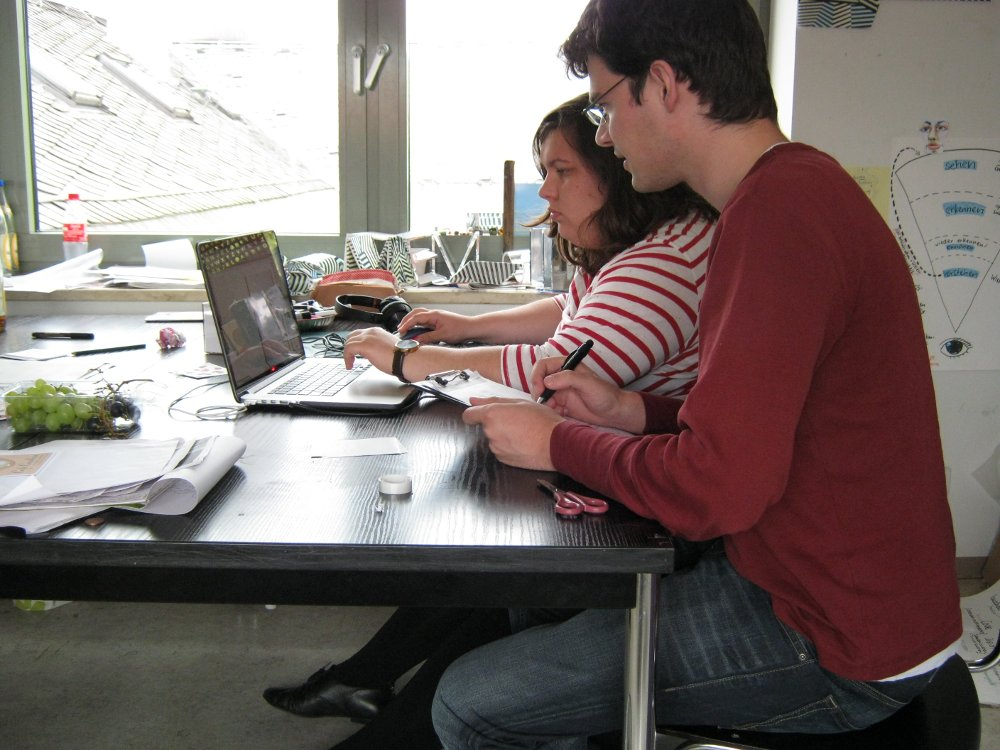observing the user’s work
Diagrams
You probably have used diagrams to show something: A flowchart, a map, an illustration of a device etc. Instead of only using diagrams to show what you know, you can also create them together with a participant to collect data.
The diagrams you will deal with in research give graphical overviews of topics such as: Moods, Spacial configuration, social connections, instructions of use for software or devices, workflows etc.
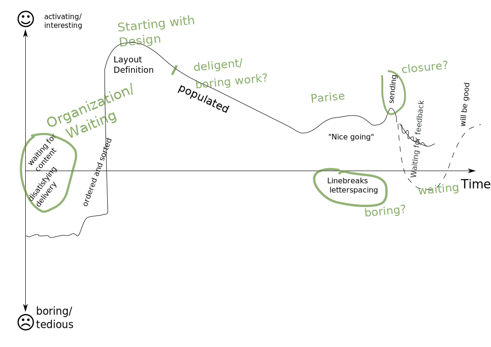timeline diagram. If the graph goes up, the mood gets better, if it goes down, the participant feels bad, borded or annoyedsocial space map: The participant is in the center. They draw people (or whatever else they think matters) around them and write the nature of the connection on the arrows
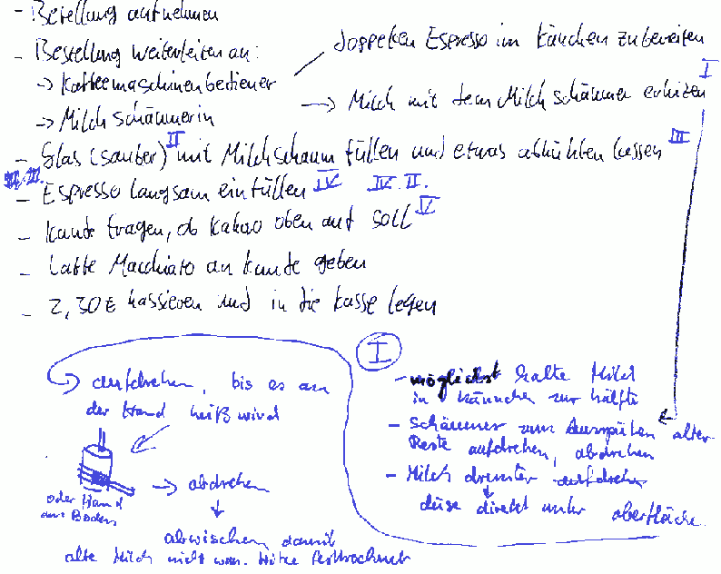List with workflow steps
You can spontaneously use drawings, but it often makes sense to prepare templates. For the timeline diagram of moods above, my template looked like this:
example template
These templates give some scaffold which makes creating the diagrams easier. Some people still hesitate to create diagrams, since they think they are expected to produce artworks or accurate sketches. In this case, tell them:
»When I say documenting by drawing and writing, it does not mean that we are going to produce an artwork here. This is what the end result may look like«
Show an example from an unrelated area of research so they can see what you are going for (In a corner of my templates I often have a little example inserted).
You and the participant create the diagram together. No single person »owns« the paper. The degree of collaboration can vary, though: It may be the case that the participant looks over your shoulder and comments verbally, while you draw; I can be the case that the participant creates the diagram without much intervention from your side and you just ask some questions.
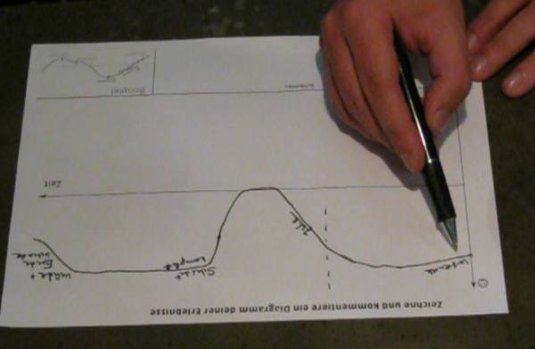researcher pointing and asking: »What dows this comment mean?«
To make them comprehensible, diagrams will have comments to explain what is drawn. If you don’t understand something, point to it and ask the participant. Both, you or the participant, can then write the information in the diagram.
»The line here seems to indicate that you were very happy at the beginning of the project…« Participant: »Yes, I’m looking forward to doing it and there are so many ideas« You: »Can you write this in the diagram, so I can understand it later?« Participant: [Writes as comment in the diagram] Looking forward, Many Ideas: Good
The diagrams can often be understood easily after the research. Often, they just need some additional comments added to make sense for you or others. For interviewing and observation this is often not the case: You need to spend much time transcribing and ordering the results.
Start the research session
Explain the research project and methods
When you have found a participant, a place, a time and have your equipment ready, you can start with the actual research session.
My advice is simple: Be friendly. If you come to their place (which is preferable, since you can observe the actual context) be a nice guest; if they come to your place or you meet in some »neutral space«, be a nice host.
Greet the participant and thank for their time:
Hello Lisa, great to meet you. I’m pleased that you could free some time for showing and telling me how you work.
You may sprinkle in a bit of smalltalk:
Did you have a good start into the day?
Participants should at least roughly know what the research is about. You don't need to reveal all your questions and topics, but the general topic should be described
This research helps us to improve the workflow in the design process to design solutions for people who do graphic design.
Make clear that you are here to learn – and not an evaluator of the quality of the participant’s work.
…Therefore we'd like to get to know how you work. You are an expert in that field and we'd like to learn from you. This is not some kind of test – when I ask questions, there are no wrong answers.
Although you may have described the timeframe and the method already when recruiting the participant, tell again what you are going to do:
We will have a conversation about your work and I'll be asking some questions. In addition, I’m interested in watching you when you do your work. The whole process will take about an hour.
The participant must know how you record data and who will see it. So tell the Participant:
I'd like to take notes, and, in addition, record audio – if that is OK with you. The audio recording helps me to focus on your work as I don’t need to concentrate as much on writing notes, if I have the recording as backup. Me and a colleague will listen to the audio; we will anonymize and transcribe the data before we share it with the product design team.
If you feel uncomfortable with being recorded at any time we can pause the recording.
You can cancel the interview at any time if you feel it is needed.
I had rarely someone who did not agree to being recorded. If that happens you can ask if they have any specific worries – possibly you can inform them about that specific aspect and they might agree when they have additional information.
[Example from an in-house research project] »Audio recording… I’m not sure about this…« »Thats fine with me. Though, may I ask what worries are?« »Hmm…yeah, I don't like, you know, human resources to get that data«
»I understand your concern. It is fine if you don't agree but I can assure you that Human Resources is a separate section. We don't share personal data and what we record today is not accessible to them. Also, all data that leaves my computer or the one of my colleague is being anonymized and we remove all data that points to you as person, including names, workplace and so on.
If they don’t agree, just stick with writing notes.
Consider summarizing the information about the research and the use of the participant's data in a consent form that the user signs. In this case keep the signed form, but hand the participant a copy of the form. Thus, the agreement is clear for both sides. See in the Appendix for an example of such a form.
After the participant has given their consent, you can start the research session.
Start simple
Start with some easy-to-answer questions – like: »Lets start with some simple questions about your job«. You can ask »What is your job title« and maybe follow »How do you name your Job when friends ask you what you do?«. As well, it might be interesting how experienced the person is: »How long have you been working in your current occupation?« These examples are tied to work related studies – for doing research with university studentsm I tie the questions to their particular context and ask, for example, how long they have been studying so far.
These questions will help you to get to know some context of the participant’s work. But there is another advantage: Such questions are easy to answer. This gets the participants used to answering questions and opening up towards you. After a brief section with these easy-to-answer questions, you can transition to questions that demand more elaborate answers.
Assure and encourage
Affirm that you listen
You will ask questions aiming for descriptions and longer answers. So you will be listening to the participant most of the time. You probably have some ways to intuitively show that you listen – like nodding with the head or saying »yes« or »mm-mhh«. This is an important way to ensure the participant that their information is listened to and valued.
However, when giving this kind of feedback you should be careful. You could easily skew the answers by indicating that some information is better than other. If you throw in a »yes, great« combined with nodding (as if you prefer what the participant did in comparison to something else) or if you just make a rather unmotivated »mm« and frown (as if what is told does not match your hopes), the participant will get selective about their answers and focus on what you seem to like. Try to keep the reassuring sounds or gestures neutral.
A negative example of feedback would be: »It was great to hear that you say you have some trouble exchanging files by mail!« (Since you may have already thought of a feature that might be helpful in that case)
The participant will try to be a nice person try to make you happy by going on about the problems with files in mails even if sending files per mail is possibly not that bad in the participant’s view. Instead of reassuring the participant using judgements and emotions, focus on the fact that you got information you that helps you:
»That was interesting to hear –«
You could even wrap the information up – »So, you said that…« – and/or refer to an area you like further information about. It will be clear, that you care for the information and listened well – without casting some judgment on what was told to you.
Make a friendly impression by using body language.
Probably, you would not make a bad impression anyway, but let’s go through it nevertheless: Don't give an angry or stern impression by frowning and crossing arms and legs. Don't look careless by leaning back and looking to the ceiling. During the interview, show reactions to what the participants says or does and look him/her in the eyes (at least for members of western culture). When taking notes, maintaining eye contact is not possible all the time – but keep eye contact when you can.
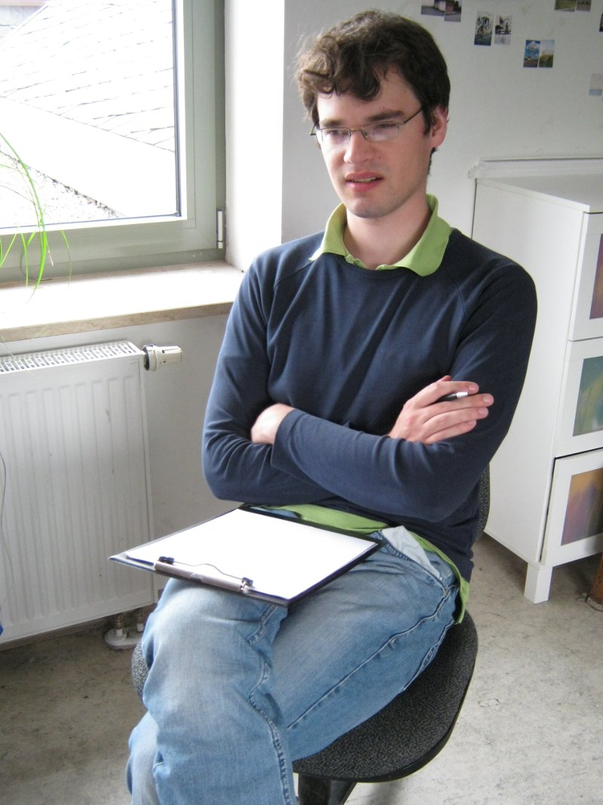not-so-good posturemuch better posture
Don’t skew the results
Ask open questions
You may have noticed that the suggested questions from the previous section are not aiming for specific, short answers. In daily life, you often want answers to be short and precise: »Are you a graphic designer?« »No, I am a programmer« / »How much do you like your Job? Give a mark« »B!« / »Please name your Tools –« »I use InDesign, Photoshop and Sketch«.
If you would diagram who speaks for how long when we ask for specific information with a »closed« range of possibilities, it would look like this:
short closed questions
These questions demand very specific answers from a determined set: Yes or no, marks from A-F, a list of nouns. They would be useful if you would want to do statistics, for analysis that allows us to give results like »56.3% agreed strongly on Question X«. However, we want to find out about the why and how of the participant’s work here 1.
Imagine, in contrast to the research session outlined above (short answers, short questions) a day-to-day situation, in which you get to know about somebody else’s experiences: A conversation with a friend. In such an exchange you will tell each other about your experiences, what you felt, why you did this and that etc. In a diagram it would look like this:
giving longer answers, equal share
In contrast to a conversation, our main goal is to collect data; we don’t want to tell about our Job as a user researcher, but hear answers from the participant. Thus asking questions and getting answers in a user needs research session look like this:
participant gives long answers, researcher asks short, open questions
The questions we want to ask should encourage answers which describe experiences and give some insight into the »why« and »how« of the users activities and motivations. This type of question is called »open question« since these questions don’t have a determined (»closed«) set of answers.
Open questions would be: »Describe how you started your work today« or »Why did you copy that page?«
Using such open questions encourage telling longer, story-like answers. These answers will even contain information you did not expect to get.
A participant is describing me the printing process: »…then I look up which color specification the print shop needs…«
That is a new step in the workflow I did not expect (Naively, I thought that you just send the document to the print shop, like you would when you print it on your desktop printer – have a file, print it).
Thus, I discovered a step in the workflow and a potential field of work (taking care of color spaces and profiles), of which I did not know that it even exists!
The information you get will not be abstract as in answers like »good« or »I dislike it«, but tied to a situation. This is preferable, because a future product will be used in real situations and not in an abstract space of thought.
»I like it when the feedback [to the design] comes quickly. No annoying waiting… it always makes me nervous. Do they [the client] like it or do I need to throw out work?«
– this tells us more about the situation than a client’s feedback being just described as »I feel good«.
If you look back to the questions already mentioned, they will share some characteristics.
Here are some possible questions
Can you describe the worst experience in your day so far?
Can you tell me how you create a layout?
Can you tell me what makes a client »difficult«
Can you describe how do you get new ideas?
All these questions start with »…can you describe« or »…can you tell me«, which encourages a longer answer (since »describing« or »telling« demands more than one word). In addition, all sentences contain a Why-, What- or How-. These question words, again, suggest an elaborate answer.
Thus, a template for such questions would look like »Please tell me [how/why/what] + [researcher’s interest]«
Contrast this with questions like
You: »Is this a good design?«
Participant: »yes!«
»Is…« -questions will be answered with »yes« or »no« – but we don't get to know why the participant approves or disapproves. In addition, »Is…«-Questions are a subtle form or influence 2 : In case of doubt, it is likely that are participant just agrees to the suggestion you give by asking »Is…«
Sometimes, »Is«-Questions will come in a disguised form – as an addition, which is made to an open question:
You: »Can you tell me how you solve this problem? …Do you do it by just calling the client and resolving the issue?«
Participant: »Yes, I do«
The first part was fine, but the »Do you…«-addition turned it into a closed question.
Avoiding closed questions is actually harder than one thinks. We intuitively try to make answering easier with such additions like »Do you…«.
When you create your questions, check if they demand some predetermined outcomes – if they do, they are closed questions. In this case reformulate the questions in a way that allows and »open«, non-restricted, story-like answers.
Be aware of your influence
A very obvious problem is influencing the participant. One way to minimize this would be making all research sessions alike – just like you would do when using a standardized questionnaire. But by doing this, you would loose the very strengths of the methods described here: Being able to find out about new and unexpected things, reacting to them and gaining understanding of the »how« and »why« by reacting on the situation.
Each participant and their context is different and you can accommodate this by adjusting the research session to the context and the activities of the participant. This would not be possible when asking the same questions each time.
So you neither can’t nor should take yourself out of the research session – you will always have some sort of effect on the participant when you do the research.
What you should avoid, though, is influencing the participant by »suggesting« favorable answers or actions. Some sorts of this type of influence are obvious, others are not.
»This is good, isn’t it?!«
Is a very obvious influence, since it blatantly states what you think the answer should be: A »yes«.
There are less obvious influences as well:
»Would you like a better version of this?«
In this example, a positive word (»better«) and a suggestion go together. Who would not like an improvement?! A »yes« is guaranteed – as well as a meaningless finding which would be »people want improvements«.
Aside from your questions, you could influence the user with your feedback since it might suggest that there are »good« and »bad« answers. For example, it may be tempting to correct users and show the »right way« of doing something:
If you know, that there is a »change color«-function in the application and the user says: »Well; I am annoyed by that application – I'd like to change the colors but that is impossible!« It may be tempting to say: »No, you can change it!«
Remember, that you want to find out what your participant does and why. To correct the participant is not very useful. If the participant would clearly benefit from knowing some technical detail, just give the crucial information after the session. But for now, use the possibility to further explore the topic without correcting the user.
You can just ask »what's the reason for you doing it this way«, or, if talking about the function itself is really important to you, you can ask »How did you expect to do the color change if there would be such a function?«
You may also be surprised or even annoyed by steps or actions in a workflow of the user which seem outright superfluous.
»When I write a text I write a draft and then send it to my colleague via mail as an attached .doc file. My colleague comments on it and returns the mail to me«
You may think that this is rather inefficient. You may be tempted to say »Why don't you paste the text in the mail and comment directly? Or write it live on Etherpad? This would be far quicker!«
Remember that nobody does inefficient things by purpose. Assume that the user has a reason. Try to find out what this reason may be.
Again you could ask: »what's the reason for you doing it this way« – and remember to ask follow-up questions to further explore the issue. In the example of the attached file it may be the case that the rich formatting functions of a word processor are needed or that such documents are used for just everything in this office, so that switching to a »better« solution would impose mental costs of switching to and operating in an unusual context.
Your influencing feedback could be non-verbal as well. Like in everyday conversations, you may shrug or frown if you disagree with an utterance or an action. Even if you don’t say »this is wrong«, frowning or shaking your head may have the same results.
So: don’t be afraid to react towards the participant – reacting towards the participant is essential in our research. But don’t suggest »good« or »bad« answers or »good« or »bad« ways of doing things by using words, gestures or facial expressions.
Silence feels strange but is o.k.
Sometimes, the participant will take time to think before answering. Intuitively, you may want to fill the silence to help the participant along.
»Can you describe me what happened after you were finished with creating the print-ready-file? [1 sec] Was it all well?« »yeah, sort of well I think«
It is tempting to fill the silence with suggestions for the answer. But it can skew the answers and can turn a open question (»can you describe…?«) into a closed question (»can you describe… was it…?« /»yes«).
Try to tolerate the silence. Usually, the participant will answer within a few seconds. If you notice silence which you want to fill, count to 3 or 5 before probing further. When the set time is up, you can ask about the question rather than giving suggestions, like
What makes the question hard to answer?
Or
Can you tell me what you are thinking about?
If the participant has started to give an answer already but stops talking and makes a longer pause and you still like to know more, you could »echo« the most recent statement or words the participant has said.
Participant: »So I had it finished and send it away to the client and then almost nothing… [Pause]«
Researcher: »almost nothing?«
This is a technique to make people carry on without skewing their answer.
Researcher:»almost nothing?«
Participant: »Yes, there was a brief mail that they got the design but I was unsure if that person actually gave it to the people who can decide something. That waiting just sucks.«
Take a closer look
Probing
You got some valuable information, but there seems to be even more interesting things you may get to know about that topic. In this case you can »probe« for further information. We already know one way to do this: Silence. The participant may just jump in and fill the silence with further information.
Participant: »So I had it finished and send it away to the client and then almost nothing… « [Pause, Researcher nods] Participant: »This is difficult, then. I mean, I got a brief mail that they got the design, but […]«
If leaving a pause does not make sense, you can achieve a similar outcome by repeating the most recent statement or words the participant has said.
Participant: »So I had it finished and send it away to the client and then almost nothing… « Researcher: »almost nothing?«
This is a technique to make people carry on without actually adding any information.
Researcher: »almost nothing?« Participant: »Yes, there was a brief mail that they got the design but I was unsure if that person actually gave it to the people who can decide something. That waiting just sucks.«
If you would like to know more about something particular, you can also ask directly:
Researcher: Can you tell me what you do in such a ›waiting‹ situation?
Asking directly can be particularly useful if the participant gave a rather vague answer:
Participant: Well, I try to get some more information and try to find out where it got stuck Researcher: Could you describe me how you would do that?
When you gather your data by observing or drawing diagrams with the participant, direct questions are very useful to explore the work:
Researcher: »I saw there was a warning in this pop-up-window. You wanted to avoid these warnings before – why would you now print the document despite of it?
Or, in the case of drawing:
This graph seems to indicate you were in quite a good mood here. Could you explain me a bit why you seem to be less happy here [Points]?
By using these probing methods you can get additional information and show the participant that you are carefully listening and observing.
Check your understanding
You can refer back to answers to check your grasp of what the participant talked about. In this case, even closed (yes/no) questions are OK.
»I saw you choose the color from that palette down there – is this the same palette you choose the background color from?« »No, it is not – the palette I am using here is…«
There are several advantages of checking:
Avoid confusions and misinterpreted research due to misunderstandings
Show that you care for the participant’s expertise.
Encourage participants to continue and tell you more.
For checking, you need always to refer to something that you want to check. You often need to describe it to the participant:
[Researcher] »So: If I want to print something first I need to ask for their color profile, when I have this, I load it in InDesign, choose the profile in the pdf dialog and then export it?« [Participant] »Yes. I usually to a test afterwards by opening the pdf in addition«
For this, you and the participant need to remember much at the same time. If possible, you can aid your memory by pointing to a device or part of a drawing or just demonstrating something. Don’t only rely on talking.
Can you tell me more about the function behind this button?
OR
Here [Points to diagram] your motivation seemed to change quite quickly – can you tell me more about this?
Researcher points to a part of the diagram
By checking your interpretations of the participants descriptions and activities, you can avoid misunderstandings and gain additional insights.
Steer the course of research
Switch topics
Over the course of your research you will cover different topics. Some may be set beforehand because you think they ought to be covered; other, new topics will reveal itself during the session.
There are several reasons to actively switch topics:
There is (seemingly) nothing more to be found out.
You covered enough and need to switch to another topic before time runs out (In this case, plan in more time in the future)
The participant is focusing on a topic that is not in the focus of your research.
To switch topics, you can voice your interest in the next topic:
Could you tell me more about agreeing on a payment with the client?
If possible, you can end the block by rephrasing what you learned before moving to the next topic.
»Let me briefly summarize: […]. Next, could you tell me more about agreeing on a payment with the client?
Referring to the previous topic can also help to give a sense of closure for the previous topic.
Thanks for telling me about specifying the task together with the client. What is also of interest for me: How do you agree on payment for your design work?
This can be particularly useful if a participant is carried away by a topic that is not relevant for you.
So, knowing about lead typesetting is important for design work… There is another topic that might seem very different, but it is important to me: Could you tell me more about agreeing on a payment with the client?
To make the topic changes less abrupt, and to show that you listened carefully, you can refer to a topic which was mentioned but not explored yet:
In the diagram, you drew a blob for »printery« – can you tell be a bit more about how do you get the design printed?
or:
You mentioned that the application needs to have the correct file format when you collaborate with someone. Could you tell me a bit more about your collaboration process?
By altering the topic you can cover the issues you need to know about and, if needed, bring your research back on course. But do it considerate – each topic needs time to unfold.
Switch methods
Every method has its strength and weaknesses. So it makes sense to transition between methods in your research
By using different methods on the same topic, you can gain new perspectives on it.
Here a possible switch from interview to observation: »You told me your general process of setting up a document for your designs. Could you show me how you do this for your current project?«
In this case, you already have a description of the activity. By observing the process, you can gain a less general, more specific and contextual view on it.
The methods you use on the same topic can be intertwined: During the demonstration of the activity, the participant may add to their description.
The participant explains while demonstrating: »So, I write a brief sticky note with what I think is important. I actually do this fairly often. I think I did not mention it before!«
Often, methods are switched together with the topic. You may have heard about motivations of the participant and now would like to explore an activity:
You said that collecting inspiration on the web is fun for you. Could you show me how you do that? Just do what you would do if I would not be here – and if possible, tell me what you are thinking while doing it.
Or you might want to talk in depth about the project structure that a participant just sketched in a diagram:
In this diagram you wrote that you have some conflicts with the client. Could you tell me a bit more about this?
Again, the methods can be intertwined:
You said that the client is often unclear in what he wants and says things like »it should pop more«. I write that here in the diagram, so I can remember it.
Using different methods and switching between them may seem like additional work. However, it can ease your work and, at the same time, increase its outcomes – just like choosing the right tools in manual crafts.
Recording data
Notes
making notes on a clipboard
While you observe or listen to the participant you will take brief notes. This is rather similar like taking notes in school or university: You go for the gist of what was said but you don't write down the exact words (Except in the case you find a particular expression itself important). One utterance or observation concerning one topic goes in one line, bullet-point style.
When you look at your notesheet and think about what to write down, listening and observing don't work well. Try too keep it as unobtrusive as possible.
If you don’t care too much about your handwriting you can write notes without much looking at the paper except for some occasional glances (the method has its limits, though)
Because of the difficulties of balancing observing, listening and note taking, there are obvious benefits of a partner who does the research with you. One person can ask questions and guide through the research, the other person takes notes. Both observe and listen.
If you record audio in parallel you can be more relaxed when writing what was said. However, you still need to take notes to keep what you observed. This can also be very useful when you listen to the audio later and wonder what was referred to when the participant refers to things as »it« and »that« – without notes it can be hard to reconstruct what the participant was talking about.
When I take notes in research I write often about 1 A4 page each 15min., sometimes more, sometimes less. So it does not make sense to try to write everything on one sheet or even in some space left on the cheat-sheet with your questions on it.
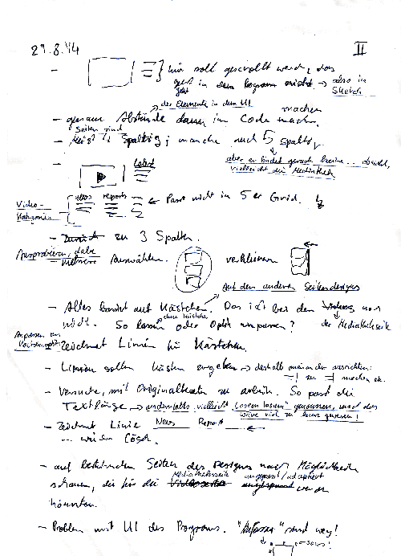Example for a sheet with research notes, written ca. over 20min
You will supplement, transcribe and analyze your notes after the data gathering. Thus you need to be able to make sense of them later. Between collecting the data and reviewing your notes, the context is easily forgotten: If you just write «empty page« it may make totally sense at the moment you write that, seeing what is happening and knowing what happened before and after. But without that implicit knowledge »empty page« does not make much sense.
Rather than »creates empty page« write »creates empty pages to organize drafts«
Instead of »changes objects« write »Changes object size to match grid«
Audio
Unlike making notes on paper, making an audio recording is a rather passive process except for pressing the record button.
I recommend using audio recordings – it is a useful supplement to your notes. It will record the audio during the research session so that you can listen to what was said hereafter. Note that it is not a perfect capture of all that happened: It records only sound, so if the participant points to the screen and refers to »this«, the recording is not much of help.
Photos
Making photos is rather easy and can capture lots of information. For example, you can photograph the participant's desk to aid your memory. Later, you can go back and see what was on it: Paper, pens, computer; were there tidy looking stacks and containers for all the utensils? Or was it seemingly messy?
You can photograph the users screen if your research involves computers and gadgets. Tech savvy users may cringe since a software based screenshot is technically superior – but if the user does not know you to make a screenshot, a camera is a handy way to capture the screen.
You should be able to make photos with your camera quickly and reliably. Thus, use a device you know and which has a good auto-mode. The only setting that I use beyond that is the exposure compensation in case an important part of the image totally dark or disappears in light. Exposure compensation allows adjusting for that.
Avoid complicated set-ups or even arranging the participant and his/her tools. Arranging the participant and his/her tools would change the data you record.
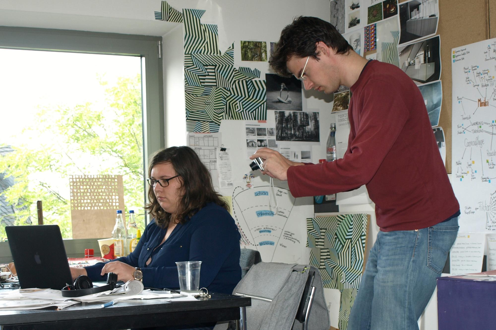photographing the working user
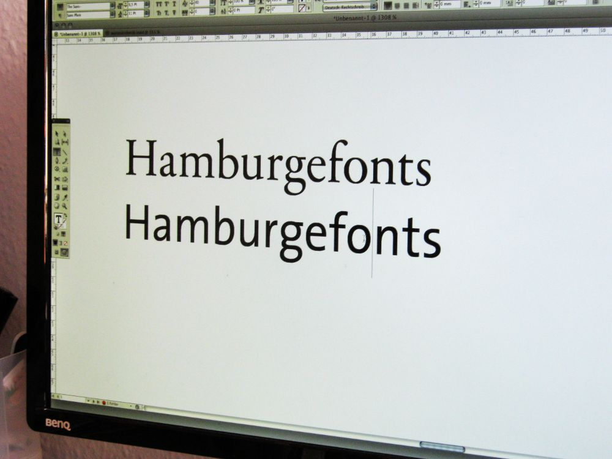photographing a screen instead of using screenshots
Sketches
The Observations you make are, by nature, visual and concerned with processes. Make sketches or even little storyboards to capture what you see.
It is very useful that you can choose what to draw: highlight what is important, leave out what is irrelevant and make annotations to ease understanding the sketches later.
I mostly use my sketches the same way I use notes: Notes and sketches are made on a common sheet of paper; one sketched observation goes in one line, if possible
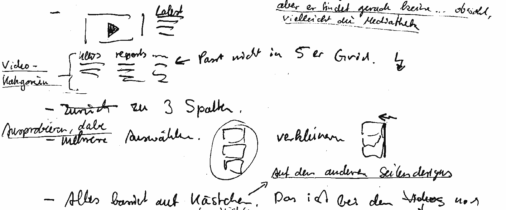Sketches on the note sheet
Diagrams
A big advantage of diagrams are that the data gathering and documentation happen at the same time. So, there is not much to add. Happy diagramming!.
Review your data
After our research session we need to take care that we can use much rich data in our later analysis.
When collecting the data with the participant you will be very busy listening and thinking of following questions. So you may not be able to keep up with writing notes and drawing sketches. To make the most of our data, we supplement our notes, sketches and diagrams and add some information about the context of the data gathering to close gaps and to help us to keep all the data ordered.
There are two ways to supplement your data: From memory and from additional recordings, like an audio recording.
Supplementing your data should be done as soon as possible after the research session. I recommend to schedule the data gathering in a way that you have some time directly after the session to supplement and order your data.
Supplement data my data from memory
I add data that I did not write down yet. In this case I add them, like
[ADDITION]:
She looks at her sketches before she starts working
or I supplement some existing point with additional information:
Sketching paper kept ready. [ADDITION]: In transit: in the backpack; at the workplace: right on the desk
You can give brief notes more meaning by adding context from your memory:
She saves old ideas [ADDITION]: For later inspiration in other projects
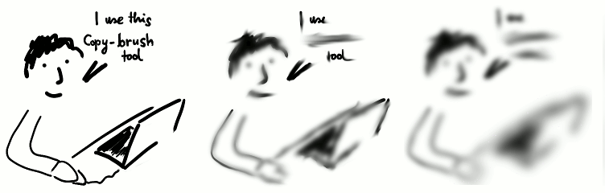memory fades quickly
When revising your sketches, redraw the lines if the sketch is ambiguous otherwise and add annotations if you think that they might ease interpreting the sketch later on.
Think of your future self: Some notes may make perfect sense to you now but since memory fades, they will seem cryptic later. So supplement and clarify your sketches and notes so you can comprehend them after your memories of the experience have faded.
I have line »Big changes« in my Notes. I remember that I made this note when the participant told me that her colleagues make bigger changes between to two versions of their designs than she does. I added this information to the notes, since it provided a way to understand what the »big changes« actually refer to.
Similarly, if my writing is rather messy, I rewrite some words to ensure that I can later decipher what I wrote.
I write and draw my supplements in another color than the color of the original notes. When I wrote my notes during the interview with a blue pen I use black for the supplements or vice versa, since I like to be able to keep track of what I did in which step of the process.
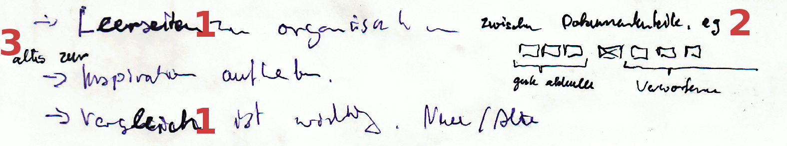
In this scanned part of a note sheet you see how the supplements are used:
1) These parts have been partly rewritten in black as it was too messy before. 2) At the right you see an newly drawn annotated sketch that provides a visual representation (how the document is organized by inserting empty pages). 3.) More information has been provided. It was »keeping for inspiration«, now its »keeping old stuff for inspiration«
Using different colors is useful for another type of supplement: Ideas or remarks in connection to your notes. When I go through the notes I often have some ideas for a design or a question which I would like to further explore in a future interview. I write them down in a third color or I prefix the note with »IDEA:« or »QUESTION« in order to prevent myself of mixing ideas with empirical data.
Transcribe your notes
Since they are often written quickly, your notes will usually be rather incoherent: Single words, small sketches, and longer sentences will all be scattered on the paper. Tidy your data and transcribe the notes in a digital document.
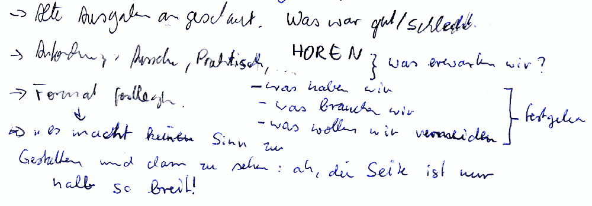before transcription
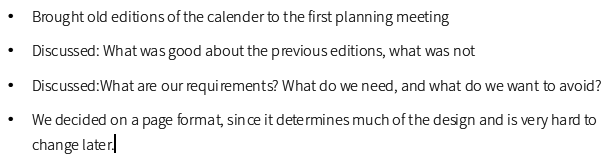after transcription
In your digital transcript, put one statement (or whatever you consider to make sense on its own) in each line. Avoid tying together two separate statements on one line and, on the other hand, make sure that the data you put into one line is meaningful on its own and is not just a single word or a description which is free of any context and thus hard to set in relation to other data. This is a simple way of ensuring that we chunk our data in a way we can later use for the analysis.
To make this reasoning more clear, here are some examples:
Not meaningful on its own (means mostly: too short):
duplicate objects
making space
If there is any way to add the actual context (out of the memory or using other notes) these notes should be supplemented with that context which hopefully helps us to get to know why are objects are duplicated and for which purpose is the space is made.
Too many statements in one line (means as well: too long):
Duplicating pages to save old ideas is common. Later she goes back to the duplicates and looks at them when she needs inspiration
She tries to have enough space for the margins to write comments in; to do so, she shrinks the main text area. She says, she could as well try to make space at the bottom of the page, and use footnotes for the comments.
Reasonable (each line can stand on its own and does not to cover multiple issues at once)
Duplicating objects to save old ideas for later inspiration
Make space for additional comments by shrinking main text area.
Alternative places for additional comments: Either right margin or bottom.
The notes from the research session and later added supplements from my memory get the same formatting in my documents since they are all data I gathered by listening or observing the participant. But I take care that later added design ideas and research questions are still easily distinguishable from the actual data that I gathered in the research session.
Possibly supplement from audio recordings
If you made a recording of your research session, use it to supplement and check data.
When the audio contains information which is not in the document or if it supplements information that is already there, I pause the playback and write the additional information in the document. So the process is very similar to supplementing your notes from memory.
Audio recording: »…hmm I send it to my boss. She will check it. Now I go to that other document, and see…«
The notes say: »Send document via mail«
So I add the information about the cause of sending the mail: »Send document via mail to the boss for checking.«
If you need to save time, go through your notes and see where they lack information. Then just jump to the parts of the audio that might complement these sections.
Order and archive your data
It should be easy to find out later which data was from which participant and how notes, sketches, diagrams and possible audio recordings fit together.
Take care that all sheets of paper and files have…:
a participant code like P1 for the first, P2 for the second participant etc. This way you can later trace back which data belongs together
The name of the project and the date. In your next or even a parallel project, you may have another “first” participant, and you don’t want to mix them up
The filenames (or the names of the folders they are in) should carry the participant code, project name and possibly the method too, which may lead to lenghty filenames like: LMS_P1_diagram-sharingprocess.png (“LMS” being “Learning Management Systems”, the project name, “P1” is the participant code, “diagram” is the method and “sharingprocess” is the topic)
You should look for possible interconnections between different kinds of data. Maybe the participant mentioned his messy desk and you have a photo of it? Add a line in your transcript, referring to the photo. Or the participant talks about the problems of sending data to the print shop and the printing process was part of a workflow diagram you both created? Write a brief line in your notes and the diagram to connect both.
If you take these steps you can still match project and participants later so you don't loose time or data because of mixups.
As a result of these steps you your now have a transcript of your notes, diagrams, sketches and photos with possible cross referencing annotations, participant codes, and descriptive filenames.
Analysis
Making sense of data
Your data can't be used for supporting design decisions: It consists of many unstructured small pieces. You can't make sense of such a mess.
We need to find a way to order the data in a way which provides us with the sense behind the data, just like a summary and interpretation of a long and complex book.
This is not a passive process: Making sense of data requires taking different perspectives and trying them out to see how the data can be interpreted in different ways to fining interpretations that are helpful for designing and explain the user behavior.
Analyzing the data also helps to communicate your findings. You will be able to summarize it in a way that enables your colleagues or teammates to work with your findings without having taken part in all steps of the process.
Doing the »right« Analysis
The data analysis is done by inferring themes from data points. Thus, the process is empirical (as it is based on gathered data). But even if the same data is used, different people will create different analysis. This is because the result of the analysis depends on the reasonable, but still individual and debatable, interpretation of the data. You could say that »looking at last years design to quickly reuse elements« belongs to a theme concerned with »I want to save time« or to a theme related to the topic of »reviewing designs for inspiration« (given that it could serve both from the user's perspective).
There is no »right« or »wrong«, nor a clear cut criterion of being »close enough« to the data when you interpret your data. Instead of having a clear, measurable rule like the »you must have p<0.05 significance« 3 in statistics, most important is that your analysis is plausible (instead of »right« or »wrong«).
I compare the process of analysis to building a house from a pile of Lego® bricks. These bricks are like the not-yet-analyzed data you start with. When you build a house out of these bricks, there is no single »right« building. But neither is it a process which is arbitrary.
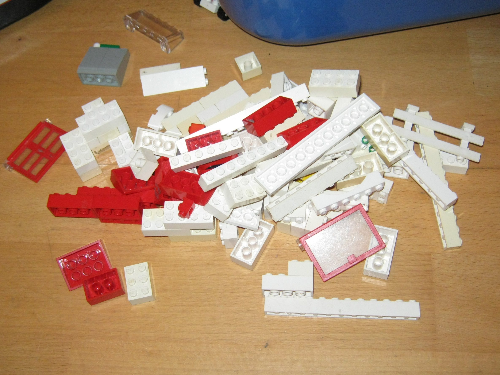possible arrangement of bricks – but not a house
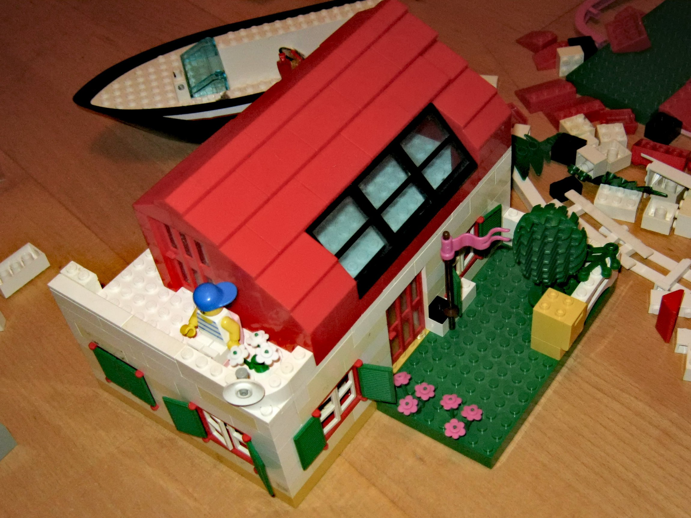one way to build a house
There are many, many ways to stack up the bricks – but only a very few of these possible ways will result in something that can be plausibly called a house.
How your final Lego® house will look is not determined from the beginning. You will change designs, move walls and sometimes try to use the same piece in different parts of the building to try out and improve. The same things will happen when you analyze data: There are many possible ways to arrange the data, but only some of them will create something that is meaningful to you and others. This creation of a meaningful structure is not determined at the beginning, but a process, just like building your Lego® house, in which you try, fail, find improvements and – step by step – come closer to a structure you are satisfied with.
How to make sense of diagrams
Diagrams can be
charts, e.g. how the mood changes over the day,
maps of places, e.g. where is what located in your office,
maps of relations, e.g. on what and with whom are your working
flows, e.g. the steps needed to print a document.
In our analysis, we will compare and summarize the collected data and bring it into an easy to grasp form.
Prepare the diagrams for analysis
To prepare the analysis, you write annotations on the diagrams. For this, you can photocopy the diagrams and write on the copies. If you like to keep it digital, you can use any application which can add text over images (e.g. the free Inkscape).
Note possible meanings, like:
Annotated Diagram
In this diagram I noted some ideas for an interpretation:
I remembered, that most participants seemed to be quite happy at the beginning of their projects. This participant seemed to have a tough start. I assumed organization and waiting was not a positive experience, so I highlighted it
Starting with the designing itself was a positive experience.
After the start the curve declines a bit. Maybe this is because populating the design with texts and images may be a bit boring.
Praise seemed to raise the mood.
…in parallel the participant did linebreaks and letterspacing, I assume these are finishing touches and itself maybe a bit boring.
Sending the finished design to the client seemed to be a positive thing. Maybe this is a kind of closure point – »I finished the design!«
…however, waiting for the final acceptance is again negative, though usualy only in the beginning (the participant projected this – the dotted line is assumed, since at the point of the research session, the design was just send a day ago or so.)
I did such annotations for all the diagrams, to keep it brief, I don't include all of them here.
Commonalities and contrasts
Once you thought of possible meanings, you can check them. For this, you compare data from different users. Do they show the same pattern or do they differ? If yes, do you have a guess, why? Note common patterns as well as interesting findings, e.g. if most diagrams share a common pattern, but one does not.
I compared the diagram above with this diagram:
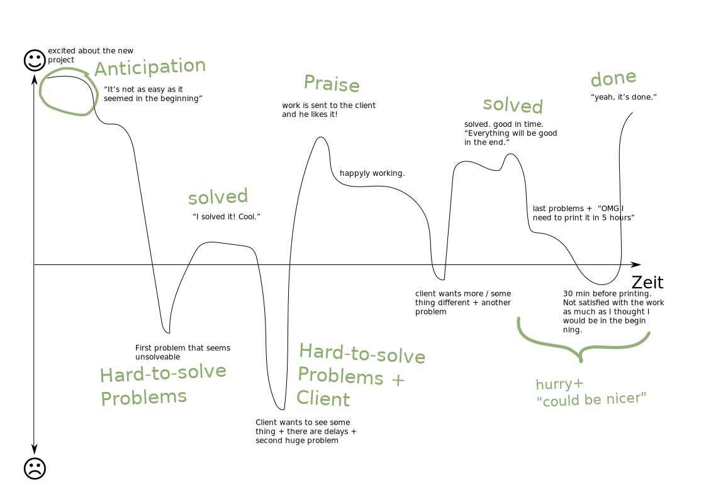Annotated Diagram, P2
It looks much different from the first diagram above – there are far more ups and downs
However, we have also a positive start of the design process
New is, that the hard to solve problem cause bad mood, and that solving them makes the participant happy.
The client also praises (which lifts the mood)
The clients wished cause problems and thus a worse mood, in the diagram above it was mainly that the client caused »waiting«
Distressful phase at the end
Like in the diagram above, there is a positive »it is done« phase
My third participant’s diagram was this:
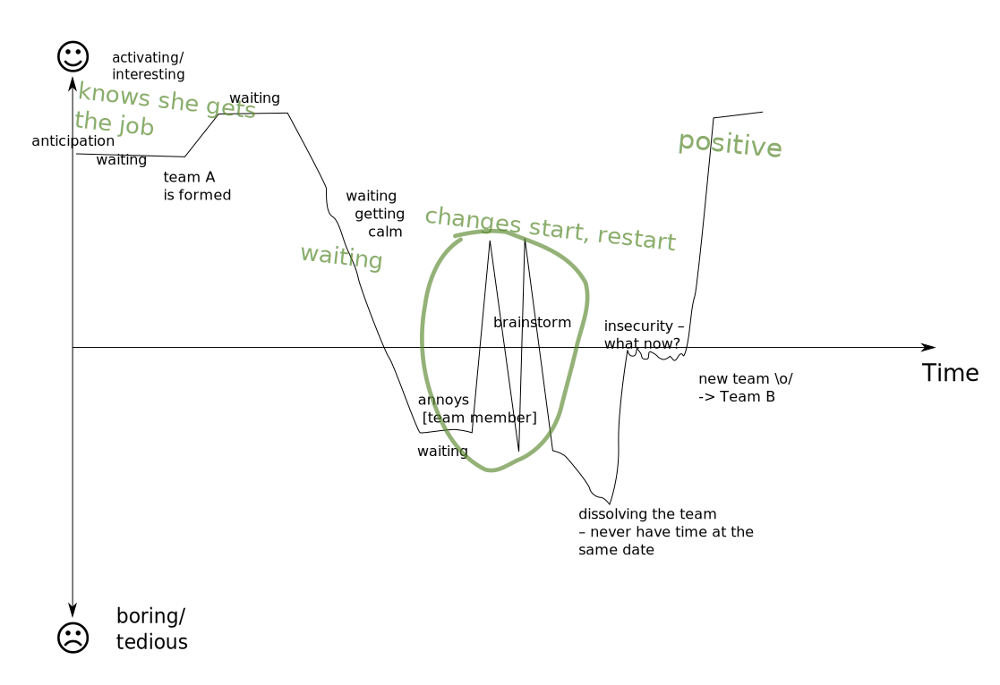Annotated diagram, P3
Here, also, a positive start of the process (though the action is not designing, but forming a team)
Waiting/idle time is associated with a declining mood, like with Participant 1
There was a phase of rapid restructuring, positive new starts and declines of mood when the process did not work
A (more dedicated?) new team formed. They had time to make it to the planning meetings. This experience was positive
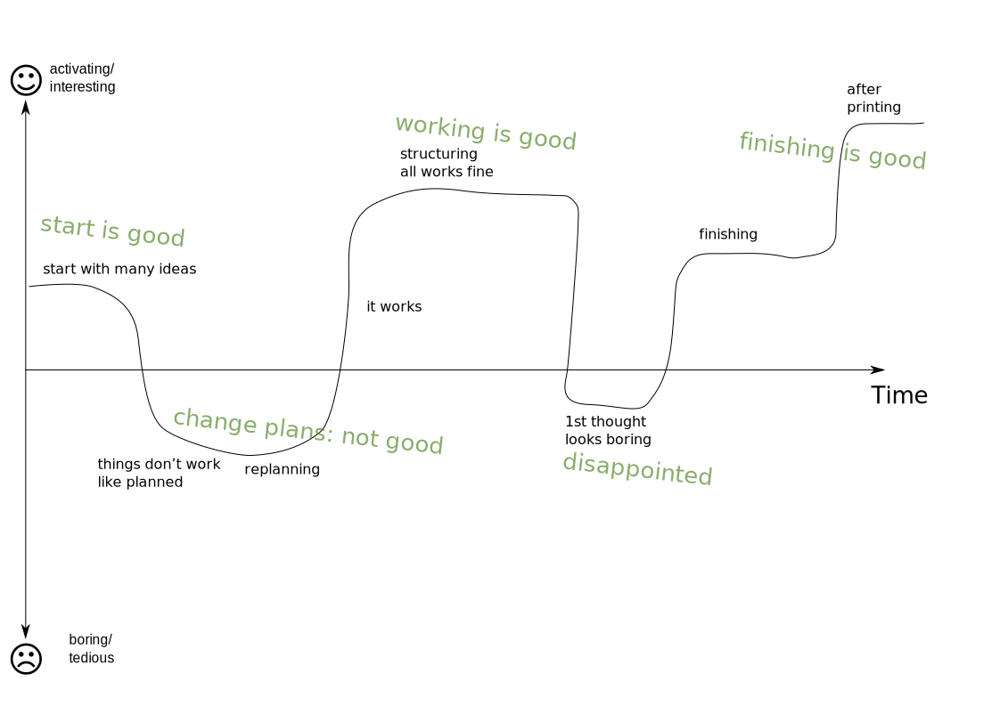Annotated diagram, P4
The forth participant’s diagram:
Start is good again (This seems to be a pattern), it can be due to anticipation (P3,P2) and because of actually starting (P1, P4, also P3)
There are less great review/replanning phases, which are also in U2 and U4;
Finishing is good, which is also a pattern in P1,P2,P3
What is new, is that the mood fell because a design seemed boring, the bad phases were usually framed as something from the outside (tough client wishes as in P2 or waiting: P1, P3) or as having a hard problem (P2).
Last but not least: the 5th participant
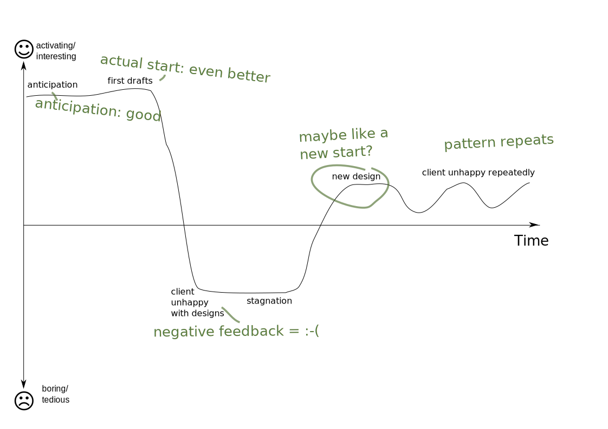Annotated diagram, P5
Again, like in the diagram before, starting is good. I would hypothesize that the anticipation feels great and that the actual start even lifts the mood a bit on top (?)
Like in P2, client wishes/negative feedback drag the mood down. Here we have negative feedback.
Maybe starting/trying a new approach is a bit like the positive feeling at the projects start (also P4 shows a similar pattern, P2 framed it more as solving problems. I don't know if that is the same)
The pattern of »new approach good/client feedback bad« repeats (at time of the research, the project was still ongoing, so there can't be a "end is positive" pattern here.)
Crosscheck
It can be interesting and useful to not only compare the diagrams on the same topic, but also relate data across diagrams and also involve your written notes. This also works vice versa – when you analyze your notes, you can check your diagrams for supplemental information and add it to your notes.
Summarize
You can summarize the findings in a diagram itself. It will look similar to the ones the participants drew. In this diagram, you include findings you could support since they showed in several diagrams. I sometimes also include data which I could not necessarily corroborate, but find interesting.
Analyzing the diagrams I got these conclusions:
In all but one (P1) diagram the onset of a project seems to be a good experience
In three (P2, P4, P5) of the five diagrams there is a significant decline after the projects first, motivated phase. The reasons are: Seemingly unsolvable problems, project not going according to the plan and unhappy clients. A commonality is that the named reasons for the bad mood are seemingly out of the control of the participants (Except for P4, where the reason was seen in the »boring« design)
for all participants the project ends good (excluding P5, where the project has not ended yet). Three (P2,P3,P4) seem to be very happy at the end: Finishing seems to be a good experience.
This can also be shown in a summarizing diagram which I drew:
summary of the analysis in diagram form
Making sense of notes
Your notes are data in written form, maybe with some occasional sketches. I will demonstrate a method to analyze your notes in depth. In contrast to the methods for analyzing diagrams, this is more complex. However, it is a very powerful method, which allows to go beyond the pure data and extract overarching themes and interrelations from it. It is a variation of typical qualitative data analysis methods like thematic analysis, grounded theory or the like.
Organize notes hierarchically
The basis for our analysis are the utterances or observations, usually represented by a line in your transcript, like:
»I find it boring to move around all the text boxes again!«.
You will organize these hierarchically and group them, if they may share a similar theme. These groups get a headline, stating the theme of the underlying pieces of data. This is useful when designing, since you can refer to the title instead of reading through all the underlying data each time.
Sometimes, you will have several themes, which relate to a common theme themselves. In this case, it makes sense to make a group of groups with a title stating the overarching theme of this group of groups.
Here is a part of an analysis.
Overarching theme: using existing work for inspiration
sub-theme: review previous projects
Data: » have a look at an old project to see how I solved this problem…«
Data: Participant searches for…
…
sub-theme: use other’s work for inspiration
Data: »I look on google images how other calendars look like«
Data: browses through the book to see…
…
Such a hierarchical analysis could be done in two ways:
Top-Down: You first name the groups and write the titles and then sort pieces of data into the groups hereafter
Bottom-Up: You first group pieces of data which seem to share a similar theme and then give the group a comprehensive title which states the topic shared by the underlying pieces of data.
We are going to use mainly the 2nd way, doing a so called »bottom-up« analysis. In a bottom-up analysis, the themes depend on the data, but also on your interpretation of the data.
In the analysis we may start with grouping similar data together – like these two lines:
Data: »I look on google images how other calendars look like«
Data: Browses through the book to see…
Then we give that data a headline and name the topic:
Theme: Use other’s work for inspiration
Data: »I look on google images how other calendars look like«
Data: Browses through the book to see…
When we come across a piece of data which shares the topic, we can add it to the group, too:
Theme: use other’s work for inspiration
Data: Searches on amazon to see how covers of books about the same topic look like
Data: »I look on google images how other calendars look like«
Data: Browses through the book to see…
This is a rather simplified overview of the process: In contrast to this example, you will as well spend time searching through data, rewriting theme titles and may need to step back or just sleep over it to find a good new way to make sense of your data.
Create meaningful groups
I already talked about grouping notes by shared themes. But what is a meaningful theme?
One method to group notes and to derive a theme would be going through the notes and see which utterances and observations mention the same thing or make the same assessment. Thus, all notes mentioning »color« would belong to one theme and get the title »Color«; all notes mentioning »good« belong to one theme and get the title »good things«.
Let’s say, we gathered this data (among others) in research on Do-It-Yourself-Work (DIY)
The shelf looks not as neat as a bought one, but it is mine
When it is broken and I need to get to work I can fix my bike quickly
The cabinet’s door was loose. It annoyed me, so I repaired it.
I look at the assembled bike and think: nobody else has the same
If we put the notes which mention the same things in the same group, we get these two groups:
Theme: Bikes
I look at the assembled bike and think: nobody else has the same
When my bike is broken and I need to get to work I can fix my bike quickly
Theme: Furniture
The cabinet’s door was loose. It annoyed me, so I repaired it.
The shelf looks not as clean as a bought one, but it is mine
Organizing the notes by this »same things mentioned«-method would help us find notes concerned with a specific thing or assessment: If we want see everything that concerned furniture, we can go through the notes in the »furniture« group; If we would like to know what people liked, we could look it up in a group titled »good«.
However, organizing by the »same things mentioned«-method has its shortcomings: A theme named »furniture« communicates only that the underlying notes have something to do with furniture. You still need to go through the underlying notes to find out what people did with their furniture and what motivates them or which problems they face.
The names of themes created by organizing by the »same things mentioned«-method are just labels for the content and have no meaning on its own.
Imagine, we would not create the themes by looking for same things being mentioned, but by the insights we drew from the notes in the group by focusing on the meaning of activities, problems and goals for the participants.
If we take the notes about DIY again this could look like this:
Theme (based on an insight about the participants): Participants need to »make things work«
The cabinet’s door was loose. It annoyed me, so I repaired it.
When my bike is broken and I need to get to work with it the next day I can fix my bike quickly
Theme (based on an insight about the participants): Good: DIY gives sense of individuality
The shelf looks not as clean as a bought one, but it is mine
I look at the assembled bike and think: nobody else has the same
If we organize notes by themes based on the insights about the participants and summarize that insight in the group’s title, the theme’s title is a useful piece of information on its own: It is not just for accessing the notes, it is an empirically based principle we can follow, when we design.
If you design, let’s say, for a DIY-Online community, a theme based on an insight, like »DIY gives as sense of ownership« may inspire the implementation of a function, which allows people to share their designs and customizations. The insight that sometimes DIY is just about fixing things may lead to the provision of a wiki for collecting best practices for doing common repairs and maintenance.
If you have a new idea you can ask: »Does this idea follow what is stated in the group titles? Does it violate them?«. You may ask yourself »Which design could I create based on this theme?«.
Since the themes are based on our data, they will express the actual needs of your users and not some (potentially stereotypical) assumptions.
Grouping your notes based on insights about your participants provides great benefits. But it can be hard and may be not possible for all your data. Thus, creating groups using the same-things-mentioned methods is still a useful method and these groups may still evolve. Usually, I have some »same-things-mentioned«-groups in the beginning and far fewer at the end – but my analysis will be a mixture of both styles.
To understand how to organize notes by themes based on insights, can be hard to grasp for beginners. To ease the learning, I provide another example:
Let’s say we gathered this data (amongst others) when researching beginners in web programming:
To try out stuff in HTML is fun
I analyze Javascript code to understand patterns
It is great to quickly test something using a JavaScript framework
To know these ›attributes‹ of HTML-›tags‹ makes writing code easier.
If we put the pieces of data which mention the same things in the same group we get these two groups:
Theme (based on same-things-being-mentioned):: Utterances with HTML
To try out stuff in HTML is fun
To know these 'attributes' of HTML-'tags' makes writing code easier.
Theme (based on same-things-being-mentioned):: Utterances with JavaScript
I analyze JavaScript code to understand patterns
It is great to quickly test something using a JavaScript framework
Organizing the notes by the insights we may draw from the notes, the structure look like this:
Theme (based on an insight about the participants): Trying out is good
To try out stuff in HTML is fun
It is great to quickly test something using a JavaScript framework
Theme (based on an insight about the participants): Learning makes own coding better
I analyze Javascript code to understand patterns
To know these 'attributes' of HTML-'tags' makes writing code easier.
Prepare your notes for Analysis
When you create groups of data, it is good to know if the theme of the group is relevant across several participants or only concerns one participant. To check for this, you should supply each note (=line in the transcript) with a participant code. A participant code works like a pseudonym: The user is not identifiable by his/her real name, but by a stand-in for the name. I use neutral number codes: The first person I did a research session with is P1, the second is P2 etc.
If you have this on your transcript:
It is hard to know what exactly the client wants, because I don’t talk directly to the client
The document is divided in sections, separated by blank pages.
The current ideas/prototypes are in the first section. All discarded or »paused« ones are in later sections (the archive”) […]
It will look like this after adding the participant codes (the data is from the second research session:
It is hard to know what exactly the client wants, because I don’t talk directly to the client – P2
The document is divided in sections, separated by blank pages. – P2
The current ideas/prototypes are in the first section. All discarded or ›paused‹ ones are in later sections (the archive”) – P2 […]
You just add the participant code at the end or beginning of each line. It is not the most exiting work, but it can be done quickly – Copy the current code (like »P1«) in the computer's clipboard (STRG+C), place the cursor with the arrow keys and the end/ home keys and paste the code (STRG+V).
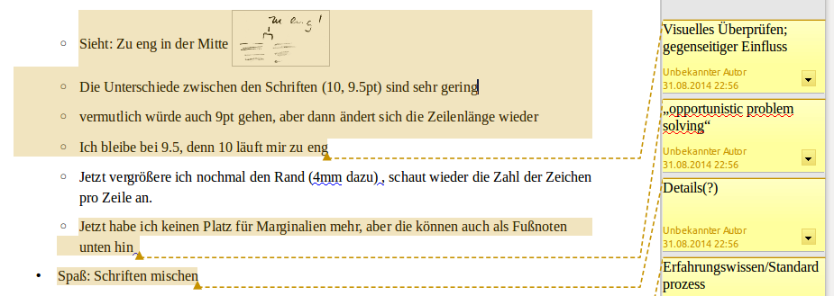Annotating data in a wordprocessor
Annotate your notes
After you added your participant codes, you can start to review and to annotate your notes in order to find possible interpretations, themes and meaning behind the observations and utterances.
This will help you to get familiar with the data and to derive meaningful themes and insights later.
Annotations can be full sentences, as well as short list of words. Usually, they concern a line in the transcript but naturally you can comment on whole sections or just at words, too.
It is hard to know what exactly the client wants, because I don’t talk directly to the client – P2 ANNOTATION: indirectness, division of tasks, friction, »I need to know the client«.
The document is divided in sections, separated by blank pages. – P2 ANNOTATION: Keeping/imposing order
The current ideas/prototypes are in the first section. All discarded or »paused« ones are in later sections (»the archive«) – P2 ANNOTATION: Keeps old ideas. Why? Possible: Later reuse, Inspiration, replication
I suggest annotating each line, but this is not a must.
The annotations should be clearly distinguishable from data you got directly from observation or the participant’s answers – just like other things you did add yourself (e.g. design ideas).
You can print out your transcript with a wide margin and write your comments in the margin. With pen and paper, you can write down your thoughts quickly, encircle interesting parts and connect them with lines. It will look messy, which is no problem, since your annotations are primarily to get familiar with the data and not for creating publication-ready thoughtful comments.
If you prefer working on a computer, you can annotate your data using a word processor with a comment function. Open your transcript, mark the part you want to annotate with your interpretation, then click the »comment« button. If you don't use the comment function, but plain text, use something like »COMMENT:« or »ANNOTATION:« to mark your comments;
Annotating your data is a creative process. If in doubt, whether an annotation is relevant or not: opt for writing it. Later on, it might become useful. If you are unsure about something or an idea seems to be far fetched, just go for it. Since you keep data and comments distinguishable from each other, you can always throw stuff out again. The goal is not to come up with great annotations, but to wrap your head around the data and to find possible ways to interpreting it.
Decide, whether you want to do a digital or analog analysis
After annotating your data you should take the decision in which media you want to conduct your analysis: Digital in a word processor, where lines hold the basic units of data, or analog on paper, where sticky notes are your means of dealing with the data.
The analysis methods described here can be used in both media. Nevertheless, each way has different strengths.
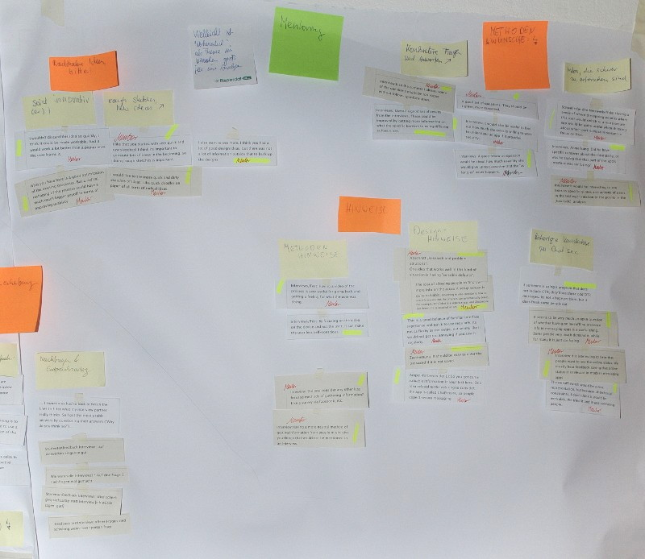analyzing data analog by using sticky notes. Theme are written on yellow sticky notes, themes of themes are written on orange sticky notes
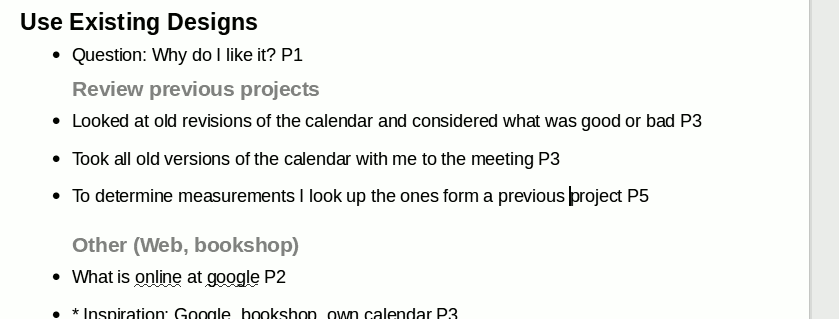analyzing data digitally by using a word processor. Themes have gray headlines, themes of themes have black headlines
The resources you need for analyzing on your computer are:
a word processor
The resources you need for with pen and paper are:
sticky notes
paper
printer (or a lot of patience to write all by hand)
(removable) tape
a big wall (2m*3m minimum – which is why the wall is usually the showstopper ).
But why should you want to use an analog analysis, if it needs all these resources? Partly, the decision can be based on preferences: Some people like that they can move around the notes by hand and can get an overview of their data by just stepping back and glancing over it.
If you work with peers on your analysis, you have some advantages when using the analogue pen and paper approach: you can easily discuss your ideas with others and will get new ideas how to structure the data. You can as well invite your boss to take a look and be part of the team, at least for some time. This type of on-site, collaborative, analysis is best done analog. Using digital tools it is not that easy and direct – despite of all the great digital innovations we have nowadays.
How to: Analysis on the computer
For analysis on your computer, I suggest the following steps for preparing your analysis:
Create a new document
Paste your transcript into that document
Add a page break before the transcript to separate not-yet-grouped data from your (upcoming) structure of lines grouped by themes.
Creating Groups: Similar data is organized in lists. You can just use the word processors bullet point list feature. To rearrange data, you can use copy and paste, drag and drop and the tools the word processor provides (toolbar to move points in lists etc.)
State themes in titles of groups: Each group gets a headline. Create a hierarchy by using different paragraph styles – bigger headlines for overarching themes-of-themes, smaller headlines for themes, that encompass the data directly. If you use paragraph styles to format your headlines, you can use the navigation tool of the wordprocessor to go through your structure. You can as well just use the list-hierarchy feature (pressing the Tabuator-key creates a subordinate list point). I prefer headlines, though.
How to: Analysis with pen and paper
For working analog I recommend the following steps to get analysis-ready:
Create table in a word processor, many rows, 2 columns (given you print on DINA4) . Each table cell will be a note.
In the table settings, switch off page breaks in cells and switch »keep paragraphs together« on, so that one note/table cell will not break between pages.
In the table settings, choose a decent padding around each cell, like 0.5cm
Choose a font size of about 12pt, large enough to read it
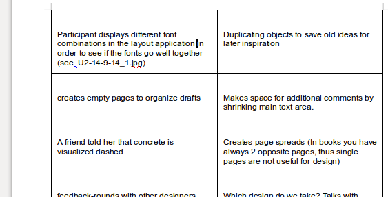
Copy/paste all your data (line by line) from the transcript into the cells
Print it
Cut out each table cell (=piece of data)
Optional: Cover the wall with the paper from paper rolls (thus you can remove the analysis, roll up the paper and archive it and you can remove it from the wall temporarily)
Creating groups: during analysis you will stick your printed notes on the widths of paper using removable tape, crepe tape or spray glue – something sticky but non-permanent, so you can move the notes around in order to gradually improve the structure.
State themes in titles of groups: Write your group titles on notes of determined colors, which are different from the color of the actual data points. If you print your data points on white paper you can use yellow sticky notes for group titles and pink ones for titles of a group of groups.
Develop a first Structure
After you annotated your notes, you can start to structure them. Structuring the notes means grouping similar data together, suggesting themes behind the data, naming these themes and deciding, which data falls under which theme.
You don't use all your data yet. You can start with what you find useful, when skimming through or you can use the data of two participants for now. The goal is to set up some preliminary structure, like a sketch of the analysis.
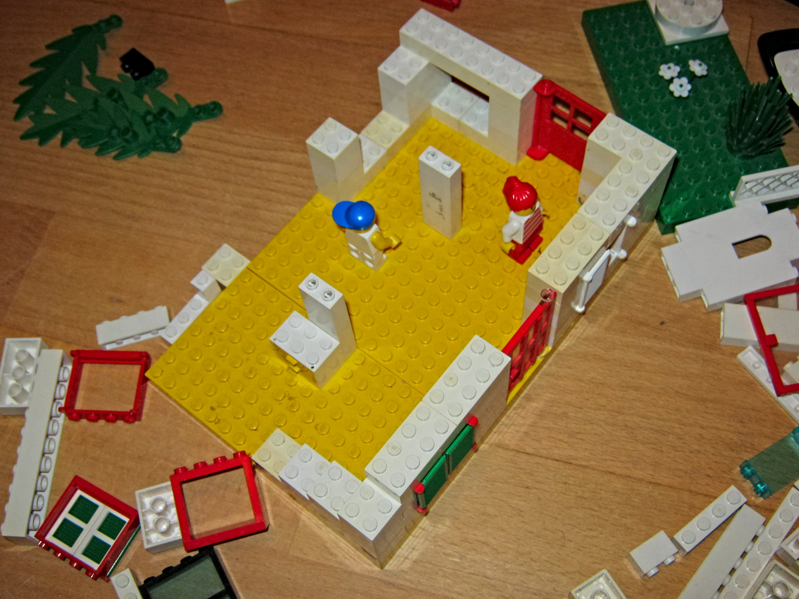setting up a basic structure
Move in Approximation
The easiest way to start a structure, is moving similar data in approximation. If you do you analysis on paper, cluster the notes you assume to follow a common theme in one place, and notes for other themes in other places. If you analyze using a word processor, move similar notes in adjacent lines. Create different groups, each containing similar notes, by using several line breaks above and below such a group or by creating a list for each assumed theme.
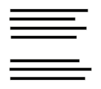two (preliminary) groups as lines (the digital way)
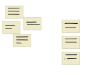two (preliminary) groups as sticky notes (the analog way)
Asking herself: what would impress the person (a safety advisor) »probably not that the blueprint is beautiful«
Good: Something that is not only useful, but aesthetically as well
These themes have in common that they are about aesthetics and requirements. I did not have a good idea about a possible group title or even an insight I can draw from them, so I just moved them in approximation.
Name Commonalities
You may have some data you assume to encompass a common theme, but you are unsure about the nature of the theme. In this case, just give that group of data a preliminary title. A group name, even if it does not state an insight, will make dealing with the data easier, since it gives your data some structure.
As you gather other data that falls under that (yet vague) category, you may be able to improve the theme and its title.
Inspiration
I try to get new ideas by looking at google images
I get new ideas while showering
[…]
Media
I like to use photos
The website is a great way to reach out
These are mere titles, naming a commonality of the underlying data but telling nothing useful for design (yet)
State insights
You may have read through your annotations and have noticed something that may make a good insight right away. Great. Just write it down and assign the data to it. Even if you have only one or two pieces of data that fit the insight, don't worry, just see if the insight will emerge to be bigger. If not, you can still revise the title or just get rid of the group and see where else the data might fit.
The first insights I wrote were these:
Review previous projects
Test designs in the media you deliver in
The whole structure of my analysis later looked like that (the main list points are titles of groups-of-groups, the indented sub-lists are group titles):
Inspiration
Review previous projects
Other (Web, Bookstore)
Media
Do tests in the media you target
Suitablility of media
»being closer« : 2 page spreads instead of single pages etc.
Idea Attachment
Motivation at the beginning; then the problems start.
Finishing is good
(Page) Format is hard to change later
TrialAndError
Mutual dependencies of design elements like type area, content, font size etc. (?)
Note that some themes are actual, meaningful insights (»Finishing is good«, »(Page) Format is hard to change later«), while some are mere group titles based on commonalities of the data they encompass (»Inspiration«, »Trial and Error«).
Now, you will have some preliminary, data based themes, each created based on a few data points. Next, try if these themes are useful for organizing more than just a few data points.
Fill the Structure
Now need to try if the structure you created is feasible. Go through your data and sort it into the themes – be it actual insights or just stated commonalities – you came up with, or just move the data into proximity to similar data.
The difference to the previous step is that we now focus on involving all the data into the process of generating themes. In contrast, in the previous steps we focused more on generating an initial structure.
If the previous step was building a (data-based) scaffold, now we try to build the actual walls.
Build upon your preliminary structure to see if the idea actually works
Aim for 3 to 10 pieces of data per theme. While it is temporarily OK to have very small groups, at the end each theme should be derived from several data points and not on a single utterance. On the other hand, if a theme encompasses more than 10 utterances or observations, consider if it makes sense to split the group in »subthemes«..
Usually, I would go chronologically through all my notes starting with the first participant and ending with the most recent one – though any other scheme will suffice as well. Just be sure, that you know with which data you dealt with already and with which you did not.
When filling the data in the structure, you may notice, that you need to create additional themes. Some of the titles of the themes may need to be renamed as well. Just go ahead and make these changes, if you feel they are needed.
[Title:] Test in the media you target
I folded prototypes for paper sizes that seem to be suitable
This is close the print shops results without spending too much
Tedious: Not having an own printer
[…]
[Title]»being closer«: Page Spreads instead of single pages
Creates page spreads (In books you have always 2 opposite pages, thus single pages are not useful for design)
Actually, the example above is not great in terms of analysis: The »Test in the Media you target« data is almost all from one person (P3) and the »being closer«-Group has only a single data point. In later iterations I'll change this group. But for now it suffices.
While I was sorting the data, I created a new group to accommodate data related to changes in designs:
[Titel:]Changing and determining
Determining: What do we have? What do we need? What do we want to avoid?
Sketching, e.g. for »How can I divide the page for 7 days of the week?«
»This is trial and error«
Some data could not be accommodated yet. So I created a misc group, where I could offload the data for now and try to find a better place later:
[Titel:]misc
God: Shortcuts
I need to ask the print shop what this design would cost
Bad: Doing the same steps over and over again.
[…many other points…]
Inside the misc group some possibilities for future insights emerged – for example the first (god: Shortcuts) and the third point (»bad: doing the…« could be part of a newly formed insights named »I want to avoid repetitive tasks«
Now, your groups will be informed by several data points each. But there will be many themes, which are created by the »same things mentioned«-Method; they don’t state insights. In addition, there might be overlapping themes and groups encompassing many data points, while other groups may be only informed by few data points from just one participant. It is time to revise the structure.
Revise the Structure
After you went through your data and sorted it into themes, review your work. You now may have a clearer view of what constitutes the themes after you sorted the data.
If you recently dealt with just a particular part of the analysis (like dealing with two particular groups), your view might be too narrow: Glance over the whole range of clustered data, and rediscover themes, which might be a better fit for some data.
Have a look at structures that need improvement: Groups, which have a title which does not express an actual insight yet, and data, for which you did not find a good place. This data might now be helpful to create new themes or can add to some of the themes.
Take a critical look at the themes in relation to the data they encompass: Is there a fit or did you fall prey to wishful thinking? Possibly, there is actually only a weak match between the stated theme and the data. In this case, revise your structure.
Some parts need to be revised and newly created
Find better names
Groups based on commonalities or vague similarity will hopefully evolve into insights about the participants. To archive this, try to revise group titles: make them more concise, clear and meaningful. If a group of data is just named with a title based on mere commonalities of the data in that group, try to state an actual insight for that group. This will almost certainly require moving some data between groups in order to accommodate the data to the improved structure.
For one group I used the title »Arranging«, since arranging and aligning objects, lines and text to a predefined grid or to each other was a task that occurred frequently. But the title »Arranging« just names a commonality. To make clear that the group is about a user activity and to state the theme as an insight, I renamed »Arranging« to »Arranging objects is an important activity«
One group was named »repetitive and manually«. This could be easily stated as an insight: »repetitive and ›do-it-manually‹ tasks are tedious«. By just adding the users view (»are tedious«) the title became an insight which is a useful principle for design.
I had the following structure:
Inspiration
Review previous projects
Others (Web, Bookshop)
»Inspiration« is a title based on the »same-things-mentioned«-principle, so I had a look at the underlying data. They all were about inspiration – but they had another commonality: All inspiration techniques used other, existing designs, often ones that were created by the same person or even for the same project (It would have been possible that people take a walk or have frequent brainstormings or take drugs to get new ideas etc.). The insight I came up with was: »I use existing designs for inspiration«
(Re) Move data to other groups
When improving your structure, it might be necessary to remove pieces of data from groups, either moving the data to a temporary »misc« group or to another, more suitable group.
While we want to make use of the data we have, it is most important to create sound and helpful themes based on the data – instead of just putting everything under a label.
It is possible, that you can state an insight more clearly by rewriting the group’s title, but as a result, the clearer title may no longer encompass all data in the group. In this case, go for clarity of the groups title, even if it means, that the theme does not encompass all the data currently subsumed in the group.
Take out the data which does not fit the improved title and see if it might fit better to another group. If not, place it in a »not yet grouped« or »misc«-Group. Revise that »misc« group, when you made changes to your structure and see, if you can use the data from that group to enhance other groups.
I reviewed the following group:
Feedback
Good: getting feedback
Bad: uncertainty before feedback from client
The title was not a meaningful insight and I felt that the analysis might benefit if I use the data in other themes.
I already had a cluster related to motivations and emotions– where I moved »bad: uncertainty before feedback from client«. The »good: getting feedback« was moved to a cluster named »Exchange with others«.
While I think I gained something out of it, these changes did not result in a new much better structure. It was part of trials and errors in the process.
Going through the data of a group named »general requirements«. I noted, that a big part of the data was concerned with balancing functional or practical requirements (price, readability etc.) with requirements concerning style (using colors, being innovative)
Thus, I renamed the group to »trying to combine aesthetics and functionality«. As the new title was more specific some data needed to be taken out, put into other groups or to the temporary »misc« group.
The previous examples were concerned with whole themes and thus focused on the macro level. Sometimes you just move data itself, without any trigger like renaming, just because you found a better fit.
For example »using the maximum possible height on a sheet of paper« was grouped into »media«. Later, I moved it to »budget«, because budget is something the user is directly concerned with, whereas media is even more abstract. The group »budget« was then later renamed »having little money and resources«, expressing that a part of the participants work was finding out how they could make the most out of a small budget (»using the maximum possible height on a sheet of paper« is a practice that results from that concern.)
Create Subgroups
Some groups may grow rather big, especially if their themes are not insights, but are based on mere commonalities of underlying data (like »dealing with color«). This is an excellent opportunity to develop themes by creating subgroups. The process of developing subgroups is like in »Develop a first structure« (just inside the group): Move similar data in proximity and try to create clear-cut insights if possible. In this process, you might find a more suitable way to state the theme of the main group, too.
I had a group with more than ten points regarding »Colleagues and Friends«. This title was rather general and thus not very useful for design. I created two subgroups which were more meaningful.
Before:
Colleagues, Friends etc.
A friend told her that concrete is visualized dashed
Puts sketches on the wall: Others will see it and talk with me.
Which design do we take? Talks with fellow designer
[…]
after splitting and rearrangement:
Exchange Knowledge
A friend told her that concrete is visualized dashed
Puts sketches on the wall: Others will see it and talk with me.
[…]
making decisions with others
Which design do we take? Talks with fellow designer
feedback-rounds with other designers
One main point in my first structure was »Highly motivated at the beginning; then the problems start.«. After restructuring this became a sub point of motivation related groups.
[group-of-groups] Motivations
[Subgroup]: Highly motivated at the beginning; then the problems start.
[Subgroup]: Finishing is good
[Subgroup]: Waiting for feedback is bad
[Subgroup]: being afraid of the client’s rejection of the design
Sometimes you first sort the data under the overarching title or principle and then move it to an already existing subgroup later:
The utterance: »Its bad that you can do imprecise things here, compared to programming (talking about Illustrator)« was first sorted into »Media« and subsequently put into »using the right media«
Wrap it up
it’s done! (though you could still change some things or two…)
The steps described above build on each other. But like in other creative tasks, there will be a lot of going back and forth between steps of creating groups, assigning data to them and revising these groups.
These iterations may also happen just in parts of the structure you create. or example, after you revised your overall structure, you find, that a grouping should undergo a major change and you put all its data out. Then, you are back to developing a structure for a part of your analysis. Or, you notice, that some notes which you moved in proximity, can be summarized by a clear principle, and you jump straight to the revision of that part of the analysis, leaving the »fill in the data« step out.
This process can take up some time. The analysis may never come to an actual halt, but it will slow down at some point. Continuing to move data may still do minor improvements, but there are no big changes anymore. Review the data a last time. The analysis is finished and it is time to communicate your results.
Final structure:
Arranging Objects as important part of the work
using existing work for inspiration
review previous projects
use other’s work
use previous ideas from same project
Media
Test design in the target media
Find suitable media
Being attached to ones own ideas
Working visually
Social
Exchange Knowledge
Collaborative decision making
Motivation
Highly motivated at the beginning; then the problems start
Finishing is good
Waiting for feedback is bad
being afraid of the client’s rejection of the design
repetitive and manual work (negative)
changes and requirements
Some changes like page format are hard to change later
combine function and aesthetics
changes cause other changes
considering the budget
trial and error as method
use the actual content for testing (not fake content)
fixate things to have a starting point
Misc
designer vs. technology
making calculations
choosing fonts
These are all the groups I created in my analysis. The results could be more concise, having fewer groups concentrating on fewer themes. However, this would probably lead to more abstract insights which would presumably harder to use in design.
The groups of groups are partly not insights themselves. I tried to find some, but was not able in a part of the cases: »changes and requirements« is not an insight (but it’s subordinated groups are: »combining functions and aesthetics« etc.). In contrast, »using existing works for inspiration« is a group of groups which states a meaningful insight.
You see, that I could not use all data, so I made some less significant groups in the »misc« section.
Communicate Results
If you work with others, the results of your research need to be communicated so they can act upon your research results.
Aside from getting the results of your research across, communicating your results has some positive side effects: collecting, organizing and summarizing your findings will make it easier for yourself to remember your findings and you may be even able to improve your analysis further.
Consider the audiences needs
Who will recieve the research results and what interests do they have? There may be different stakeholders with different needs, e.g.
Management Programmers Designers …
Some of their needs align, some may differ. So before you start you should ask who will recieve the results and what specific interests they have. Also inquire if there is any preferred format. Some may only take written reports, others may be used to slidedecks.
First things first
I try to structure my documentation in a way that puts the essential information first (Also called »Inverted pyramid style«). A simple rule of thumb is, that if a reader stops early at some point, they already know the most crucial information. If the documentation is structured in a different way it can happen that after reading half of it, the most crucial information has not delivered. Also it is motivating to deal with documents that put important matters first. One can read e.g. the summary in the beginning and then decide that this is the needed information and continue – or discard the document and don't wast time.
Don't make it hard to get
You create the documentation for people who are not user researchers and who often have not taken part in the research. They won't understand any jargon of your profession and maybe also not the vocabulary the users use. Thus, avoid language that is hard to grasp or uses words unknown to your readers. Instead, »translate« for them: Describe the research in terms they know and help them to make sense of the participants’ language. As a rule of thumb, rather assume too few knowledge than too much. A person knowing something will just overhear or overlook an explaination while a person who lacks knowledge is lost without it.
Sections of a research documentation
There are some typical sections of a research documentation:
Executive Summary
Summarize the research and its results in a few paragraphs.
Aim
Summarize the research question you aim to answer with your research
Research Methods
Describe how you gathered and analyzed the data. The research in this guide uses »interviewing and obeservation« for gathering the data and »thematic analysis« or »qualitative clustering« as analysis methods (The terms for the analysis are not 100% scientifically correct though since analysis followed no »official« method)
Participants/Sample
Describe how you got your participants and why you did so. Show that you did not just got somebody, but people who were relevant to the research needs.
Results
The themes and consolidated diagrams belong here. They are the core of your documentation. While most other content follows a pattern, the results will be different each time. So be extra careful that the results can be understood by the audience and use illustrations, photos and quotes to get your message across.
Recommendations
Sometimes you may give some advice for possible further research or or designs.
Appendix
If your audience is interested in digging deep your documentation you can provide additional information here, e.g. an in-depth breakdown of your themes or additional photos and sketches. If you provide material that is less abstract, take extra care to check if the privacy of the participants is maintained.
In a longer, written report you may have all of these sections. However, often you will only provide a subset according to the needs of the audience e.g. only the executive summary and the recommendations in an email.
Components of deliverables and reports
Let me give a brief overview of typical building blocks for communicating your research. They are all useful on their own and you can combine them to use their strengths together.
Text
Text is as very versatile way to convey informations. On the downside, text may seem not as quickly accessible as a diagram or a sketch. To lower the barriers, make sure that people know why they are reading your text. Give essential information at the beginning (What is this text about? Why was the work done?) and make sure that it is easy to get a quick overview: Structure your text using headings, lists and italics to guide the reader.
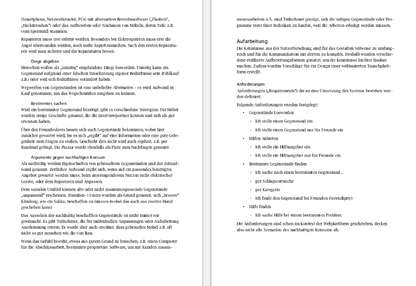a page spread from a report
There are lots of books which explain how to write concise and easy-to-get text. The most efficient guide I know was given by George Orwells in »Politics and the English Language« – I quote:
Never use a metaphor, simile or other figure of speech which you are used to seeing in print. > > 2. Never use a long word where a short one will do. > >
If it is possible to cut a word out, always cut it out. > > 4. Never use the passive where you can use the active. > > 5. Never use a foreign phrase, a scientific word or a jargon word if you can think of an everyday English equivalent. > > 6. Break any of these rules sooner than say anything barbarous. 4
In addition, read the text aloud – in particular, if you already noticed that you have had difficulties finding the right word or to express a complicated concept. If you need to re-read sentences to make sense of them or to stress the right words, you should go for a rewrite.
Quotes
Quotes convey the participant’s motivations and feelings. This is important to help others to have empathy with the users.
Rather abstract: Users like the alignment function > > Combined with Quote: Users like the alignment function. Sandy: »It is like doing work by magic – click! And its there!«
Remember to protect the participant's identity if they did not give you the permission to share their quotes or names. If they did not give you the permission, only share a plausible, but faked »quote« and don't use real names but faked ones as well. Don’t deceive your audience either: mention that the names and quotes are not real but are only corresponding to their actual counterparts.
Scenarios
Activities don’t happen in isolation from each other: They depend on previous activities and (possible changing) motivations. One way to communicate a sequence of interrelated activities is a scenario. Simply put, a scenario is a short story written as text or given as a sequence of images (like a comic)
A good framework for writing scenarios is asking yourself these questions:
Person: Who is the main person in the scenario? Motivations: Why
does this person what he/she does? What is the motivation? Activities:
What are the actions of the person and how are they done? Context: Where
and When does the scenario take place?
Answer them in your scenario.
Annika studies media culture and needs to finish here homework on »Cultural subconceptualist theory in the works of Koons« in order to hand the homework in on time. She goes to the library to see if the book on »Capitalism in the works of Rushdie« by Andreas Geoffrey contains arguments supporting her view on the structuralist paradigm. > > She enters the library and walks up to one of the computers standing in the corners of the library's halls. > > She wants to look up the name of the author, but she notes that she forgot the copy of the book that referenced the work. She still knows that »Rusdie« or »Rushdie« was in the title of the book she needs. After several trials she finds the right spelling of the name and, after scanning through a list, she finds the book she wants to read. The detail page of the search application gives the address of the library building she is in already and a code: »X0-3R52«… [scenario may continue]
You could as well create a scenario as a series of sketches, like a comic strip:
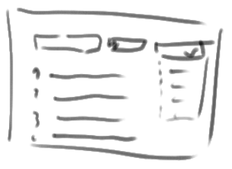the search interface of the library's computer
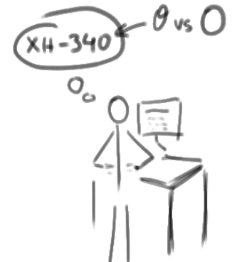remembering the code. Is it a zero or the letter ›O‹?
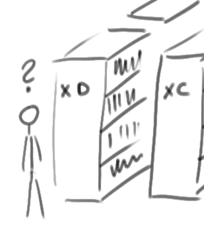I can’t find the right shelf!
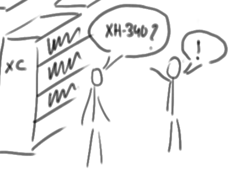I'd better ask somebody… now I know where I need to go!
Diagrams
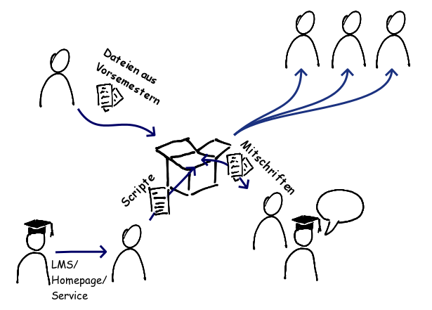A diagram showing the sources and flow of files used by university students
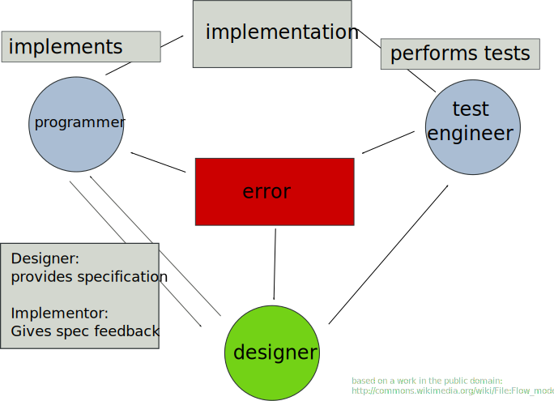A diagram showing the workflow in creating a software
Diagrams are useful to show high-level concepts, relations and dependencies – for example showing which activities need to be done to create a page of a magazine or the ways a group of students share files when working together on a joint project.
You may use the summary diagrams you created in the analysis or create new diagrams for this step.
Photos and Illustrations
Which one is easier to understand and less ambiguous:
This:
The participant’s desk is rather tidy. In front of the keyboard is a book and on the book a calculator. Left hand are additional utilities, like…
Or that:
I suppose the image wins.
While the above example just shows a setting, we could as well combine the strengths of text and images in an annotated photo.
Or you could show your general findings about how people organize their desktops by sketching a prototypical arrangement of items.
Illustrations and photos in particular have another function aside of getting information across: They make the research and its findings more graspable, intuitive and »real« for your audience. Just like scenarios and quotes they enable to imagine how your research participants acted which in turn helps to develop empathy for them. Consider again our example from above in which an image and a text were compared. The photo does not only give some abstract information. It shows that you have been with actual participant or – in this case – did research on actual tools they use.
When using photos, remember to protect the privacy of your participants. Only show photos of their workplaces or of themselves if they agreed to it.
Typical documents for reporting results (»Deliverables«)
You can combine text, images diagrams and scenarios in several ways to communicate your message. Let’s look at some possibilities.
Quick findings
Quick findings are short, annotated lists of your most important findings. They include only a brief description of methods, participants and environment. The focus is on the most important results. Quick findings can also be delivered before the analysis is fully finished. In this case, highlight that you are still refining the research.
Quick findings are very useful if your audience:
already know about your research and want to have a look at your progress
have very little time, and need efficient access to your results
Written Reports
Written reports are roughly four to a several dozen pages long. Nevertheless, only deliver what the audience needs and wants to know – be concise. It is easy to get sidetracked and to write length and complex sentences.
Written reports consist mainly of text, but you should use images, quotes and diagrams too when they make sense.
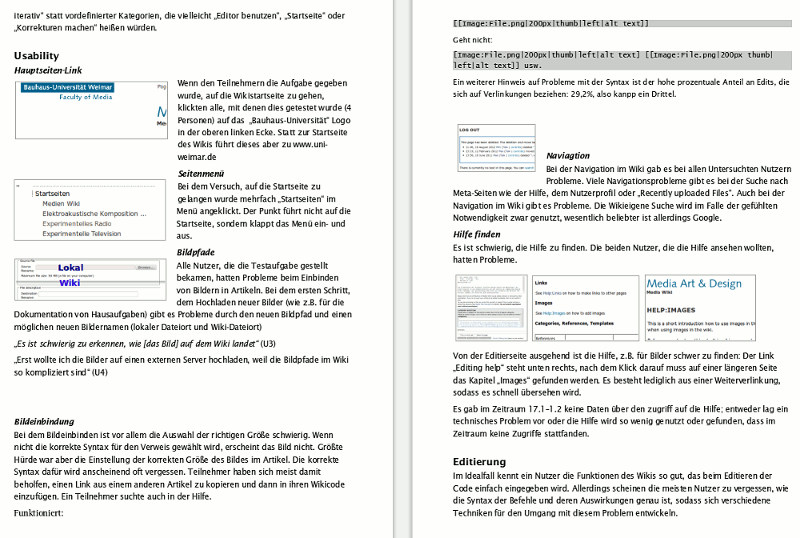page spread from a report on wiki use for teaching at university
Slides
Slides can deliver the same content as written reports or quick findings. They convey the information in a more visual way – so they have fewer text and more images, diagrams, and storyboards.
If you give the presentation yourself try to deliver as few as possible of the information by text on the slides. You can do the talking and the slides supplement the information you give. On the other side, it may makes sense to use more text on the slides if you just share the slides with others and don’t present them yourself.
a row of slides from a presentation on wiki use for teaching at university
Posters
A poster is a great way to show the results in a way that is easy to grasp and will be consumed too by people who do not take specific interest in user research. They can be put up in a hallway for everyone who walks by.
Focus on a few important findings and show them using mainly graphical elements. You also can create a big version of key diagrams you creaed or summarized.
Appendix
Learn (even) more
Books
Observing the User Experience : A Practitioner's Guide to User Research by Goodman, Elizabeth ; Kuniavsky, Mike; Moed, Andrea. 2nd Edition. Amsterdam: Elsevier, 2012. ISBN 978-0-123-84870-3 Covers multiple user research methods as well as research planning, recruiting and communicating results. Particularly interesting are the chapters on recruiting and analysis of qualitative data.
Interviewing Users : How to Uncover Compelling Insights by Portigal, Steve. 1. Edition. New York: Rosenfeld Media, LLC, 2013. ISBN 978---1-9-33-82-0 As the title suggests, it’s focused on asking questions and listening to answers, but it covers additional methods as well. Includes lots of useful tips.
Shane, the Lone Ethnographer: A Beginner's Guide to Ethnography by Galman, Sally Campbell. Lanham: Rowman Altamira. ISBN 978-0-759-10344-3 Lots of the methods I described originated in ethnography. This book gives an hands-on and thoughtful introduction to enthography. Comes as a comic and is fun to read. Minor flaw: The lettering is a bit obscure
Successful Qualitative Research : A Practical Guide for Beginners by Clarke, Victoria; Braun, Virginia: . New.. London: SAGE, 2013. ISBN 978-1-847-87581-5 This book is aimed at aspiring academic researchers. Hands-on but covers the underlying (social science) theory as well. It inspired much of the analysis section in this book. Interesting for those who want to know more about doing thorough analysis of data (using the method of »Thematic Analysis«)
Rapid Contextual Design : A How-to Guide to Key Techniques for User-centered Designby Holtzblatt, Karen; Wendell, Jessamyn Burns; Wood, Shelley. Amsterdam: Elsevier, 2005. ISBN 978-0-123-54051-5 Describes a collection of methods for user research. It is aimed at bigger teams (with time and money, I assume). However, its mentioned here since the idea of grouping data as core activity of data analysis is from it.
I agree to participate in the study conducted and recorded by the [Agency/Organization].
I understand and consent to the use and release of the recording by [Agency/Organization]. I understand that the information and recording is for research purposes only and that my name and image will not be used for any other purpose. I relinquish any rights to the recording and understand the recording may be copied and used by [Agency/Organization] without further permission.
I understand that participation in this study is voluntary and I agree to immediately raise any concerns or areas of discomfort during the session with the study administrator.
Please sign below to indicate that you have read and you understand the information on this form.
Date: _________________
Please print your name: ___________________________________
Please sign your name: ___________________________________
Thank you!
We appreciate your participation.
Research concerned with finding out about »how« and »why« using methods like interviews and observations is also called »qualitative« research. In contrast, »quantitative research« usually tests hypothesis (like »an orange ›buy‹ button generates more sales that a blue one «) and employs controlled experiments and statistics. In this book we learn about qualitative methods↩